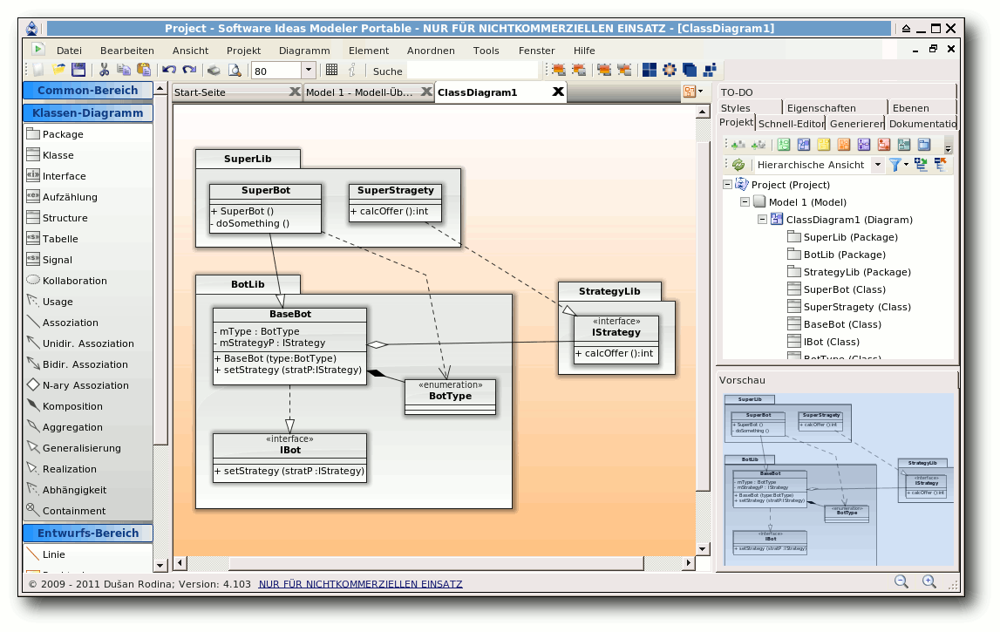
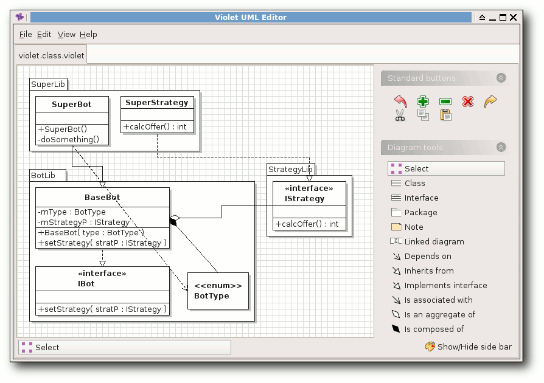
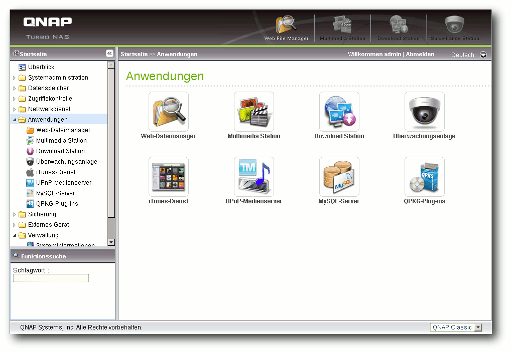

freiesMagazin Februar 2012
(ISSN 1867-7991)
Topthemen dieser Ausgabe
Python – Teil 11: Zwitschern in Schwarz-WeißIm letzten Teil der Python-Reihe wurde das Modul subprocess vorgestellt. Damit ließen sich auf vielfältige Weise Prozesse erzeugen, Ausgaben lesen und Eingaben senden. Auch Pipes mit Hilfe des subprocess-Moduls wurden besprochen. Nach dem eher theoretischen Teil soll dieses Mal ein praktisches Beispiel besprochen werden – ein kleiner Twitter-Client für die Kommandozeile. (weiterlesen)
UML-Programme im Test
Für die moderne Software-Entwicklung sind Entwicklungswerkzeuge unerlässlich. Das fängt bei einem normalen Interpreter oder Compiler an und hört bei einer Entwicklungsumgebung nicht auf. Für die objektorientierte Programmierung hat es sich in vielen (wirtschaftlichen) Projekten durchgesetzt, vor der Implementierung ein Software-Modell zu erstellen. Hierfür gibt es eine Abstraktionssprache namens UML. Der Artikel soll einige der unter Linux frei verfügbaren UML-Programme vorstellen. (weiterlesen)
Debian-Installation auf dem QNAP TS-509 Pro
Network Attached Storage (NAS) ist ein beliebter Datenspeicher für Privatpersonen wie auch für Unternehmen geworden. Es handelt sich dabei durchaus um vollwertige (Server-) Rechner mit eigenem Betriebssystem. Die Geräte von QNAP, die mit Linux laufen, zeichnen sich durch ihre Offenheit aus. Dies soll am Beispiel des QNAP TS-509 Pro gezeigt werden, auf dem Debian installiert wird. (weiterlesen)
Zum Index
Inhalt
Linux allgemeinopenSUSE 12.1
Dezember und Januar im Kernelrückblick
Anleitungen
Python – Teil 11: Zwitschern in Schwarz-Weiß
PHP-Programmierung – Teil 5: CSS
Software
UML-Programme im Test
Selenium
Hardware
Debian auf dem QNAP TS-509 Pro
Community
Rezension: Android-Apps entwickeln
Rezension: Spielend C++ lernen
Magazin
Editorial
Die Neuerung der EPUB-Ausgabe
Veranstaltungen
Konventionen
Impressum
Zum Index
Editorial
Rückmeldungen zur EPUB-Version
Die EPUB-Version, die wir letzten Monat erstmals von freiesMagazin angeboten haben, scheint sehr gut anzukommen. Bei der ersten Version gab es noch einige Fehldarstellungen und Probleme, die nun aber bei der zweiten Version nicht mehr auftreten sollten. Alle Änderungen, die am EPUB und teilweise auch an der HTML-Ausgabe vorgenommen wurden, können in einem extra Artikel „Die Neuerung der EPUB-Ausgabe“ nachgelesen werden.Neue Autoren gesucht
Auch wenn man es der aktuellen Ausgabe vielleicht nicht ansieht, ist unser Artikelvorrat fast aufgebraucht, um nicht zu sagen am Ende. Es gibt noch eine Handvoll Artikel, die bei Autoren in Planung sind, aber nichts, womit freiesMagazin das Jahr 2012 bestreiten könnte. Wir suchen also händeringend neue Autoren, die über eines ihrer Lieblingsthemen schreiben wollen. Jeder Artikel ist willkommen, ein Bezug zu Linux und Open Source sollte aber gegeben sein. In den Autorenrichtlinien auf unserer Webseite [1] versuchen wir alle Aspekte darzustellen, die beim Schreiben eines Artikels helfen können. Wer noch keine Idee hat, kann sich über die Artikelwunschliste [2] Anregungen holen. Aber selbstverständlich sind auch andere Themen, die dort nicht auftauchen, gerne gesehen. Wenn Sie Interesse haben, melden Sie sich mit Ihrer Idee oder dem fertigen Artikel beiNeue Setzer und Layouter gesucht
Wir benötigen auch neue Setzer und Layouter für freiesMagazin (vorausgesetzt, es gibt neue Autoren und Artikel, wovon wir hier aber mal positiv denkenderweise ausgehen). Das Magazin wird in LaTeX gesetzt, sodass Wissen in dieser Materie und die Beherrschung von pdflatex Voraussetzung sind. Als Setzer kümmert man sich dabei um die Einhaltung unserer internen Satzrichtlinien, damit alle Artikel gleich formatiert sind. Hierfür sind nur geringe LaTeX-Kenntnisse vonnöten. Der Layouter versucht dann in der Regel die Artikel ansprechend zu gestalten, sodass Bilder ihren richtigen Platz finden und alles stimmig aussieht. Ein Auge für gutes Design sollten Sie also mitbringen. Wenn Sie Interesse haben, das Magazin mitzugestalten, melden Sie sich bei[1] http://www.freiesmagazin.de/mitmachen
[2] http://www.freiesmagazin.de/artikelwuensche
Das Editorial kommentieren
Zum Index
openSUSE 12.1
von Mirko Lindner In der Version 12.1 will openSuse noch besser, leichter, stabiler und überhaupt das beste openSUSE sein. Der Hersteller selbst verspricht, mit dem neuesten Produkt ein weitgehend universelles System für Desktop-, Netbook- und Serveranwender zu liefern. Der Artikel wirft einen genauen Blick auf die Distribution und testet sie in produktiven Umgebungen. Redaktioneller Hinweis: Der Artikel „openSUSE 12.1“ erschien erstmals bei Pro-Linux [1].Einführung
Mit der aktuellen Version 12.1 von openSUSE erscheint nun erstmals eine Ausgabe der bekannten Distribution unter dem Dach des neuen SUSE-Eigentümers Attachmate [2]. Über acht Monate lang werkelten die Entwickler an der neuen Version. Begleitet von zahlreichen Alpha- und Beta-Versionen gelang es dem Team, den ehrgeizigen Plan einzuhalten und openSUSE 12.1 pünktlich zum versprochenen Termin auszuliefern. Doch was darf der Anwender von dem neuen Produkt erwarten? Der Versionssprung von 11.4 auf 12.1 überrascht zuerst, war es doch Tradition, die Hauptversionen immer mit der Unterversion 0 beginnen zu lassen. Doch dies will das Team mit der aktuellen Version gerade ändern. Der Eindruck einer „Hauptversion“ soll mit der Nomenklatur 12.1 eliminiert werden. So wurde offenbar den „x.0“-Versionen in der Vergangenheit mehr Aufmerksamkeit geschenkt als anderen. Da jedoch jede neue openSUSE-Version viel Neues enthält, verzichten die Entwickler zukünftig auf „x.0“.Das Startbild von openSUSE 12.1.
Lieferumfang
Die Gemeinschaft rund um die freie Distribution liefert auch mit openSUSE 12.1 einen gewohnt großen Umfang an Software. So setzt das Produkt in der aktuellen Version auf die im Oktober veröffentlichte Version 3.1 des Kernels auf, die unter anderem Optimierungen beim Zugriff auf RAM enthält und gegenüber der letzten Version zahlreiche Änderungen erfuhr. Die Basis der Distribution stellen glibc 2.14.1, gcc 4.6 und der X-Server 1.10.4 dar. Ferner flossen GNOME 3.2 und KDE 4.7 in den Lieferumfang von openSUSE ein. Zur Grundausstattung gehören daneben ALSA 1.0.24.1, CUPS 1.5.0, Postfix 2.8.5 und Mesa 7.11. Bei Grub setzt die Distribution weiterhin auf die alte Version des Boot-Loaders auf, was unter anderem dazu führt, dass bei der Auswahl von Btrfs nun eine dedizierte Boot-Partition erstellt werden muss. Erweitert man die Quellen um die allseits bekannten Alternativquellen, so gibt es kaum eine Applikation, die nicht für openSUSE angeboten wird. Es spielt dabei kaum eine Rolle, ob man ein Programm, eine Bibliothek oder um ein Modul für eine Sprache sucht, denn openSUSE bietet fast alles auch in den neuesten Versionen an. Eine schier unerschöpfliche Quelle von neuen und aktualisierten Paketen ist auch der Build-Service des Projektes. Anwender, die sich für eine Downloadversion [3] entscheiden, stehen vor der Qual der Wahl, denn zur Auswahl stehen wie gewohnt mehrere Varianten. So bietet das Team DVD-Medien für 32- und 64-Bit-Systeme. Darüber hinaus gibt es auf der Software-Seite noch spezielle Live-CD-Versionen mit GNOME oder wahlweise KDE zum Download. Diese lassen sich entweder von einem Medium wie CD oder einem USB-Stick starten oder auf die Festplatte installieren. Darüber hinaus stehen Anwendern Netzwerk-Installationsmedien zur Auswahl. Alternativ stehen auch zahlreiche Derivate der Distribution zum Bezug bereit, die mittels Suse Studio erstellt wurden.Installation
War die Installation einer Linux-Distribution anfänglich etwas für Spezialisten, so hat Linux diesbezüglich in den letzten Jahren neue Standards gesetzt. Alle großen Linux-Distributionen haben viel Entwicklungszeit in die Verbesserung des Installationsprozesses gesteckt, so dass eine Linux-Installation kaum Probleme bereiten sollte. Fast alle Anbieter konzentrieren sich mittlerweile auf die Pflege der Tools. So auch openSUSE. So war es kaum verwunderlich, dass auch die neue openSUSE kaum Probleme bei der Installation verursachte. Bei der Installation auf einem Server, Desktop, einer virtuellen Maschine oder Laptop wurde die komplette Hardware einwandfrei erkannt und sinnvoll konfiguriert. Es sollte allerdings erwähnt werden, dass die Tests keinesfalls eine Referenz darstellen und lediglich einen Ausschnitt wiedergeben – je nach Hardware und Peripherie kann sich die Installation natürlich unterschiedlich verhalten. Hier soll der Artikel sicherlich keinen Anspruch auf Vollständigkeit erheben. Funktionell gesehen unterlag die Auswahl der möglichen Installationsmethoden keinerlei Änderung. So bietet openSUSE immer noch eine automatische Installation wahlweise mit deaktiviertem ACPI oder in einer sicheren Umgebung, eine manuelle Installation, Rettungssystem oder Speicher- oder Firmwaretest zur Auswahl an. Darüber hinaus lassen sich bereits beim ersten Booten der DVD die Sprache und die zu verwendende Auflösung bestimmen. Fast schon obligatorisch änderte das Team auch in der neuen Version das Aussehen des Boot-Screens.Die Installation des Systems erfolgt weitgehend automatisch.
Die eigentliche Installation gleicht vom Ablauf her, von kleineren Ausnahmen abgesehen, der von openSUSE 11.4. Neu ist unter anderem, dass das Projekt die noch in der Distribution enthaltenen Novell-Logos vollständig entfernte. Daraus resultierend wurden fast alle Icons sowohl bei der Installation als auch bei der Konfiguration ersetzt. Auch die automatische Partitionierung unterlag diversen Änderungen. Die wohl wichtigste stellt die prominente Unterstützung von Btrfs dar. Zwar setzt auch openSUSE in der aktuellen Version auf ext4, doch bietet das Produkt bereits bei der Konfiguration der automatischen Partitionierung die Möglichkeit an, auf Btrfs als Standardsystem umzuschwenken. Neu ist auch, dass bei der Auswahl des designierten Standarddateisystems die Distribution Btrfs nicht als experimentell bezeichnet. Zudem wurde die ehemals etwas versteckte Option, wonach für das Home-Verzeichnis eine eigene Partition genutzt werden soll, ebenfalls auf die Startseite der Partitionierung verschoben. Im Expertenmodus können zudem nun tmpfs-Volumes eingehängt werden.
Die verschiedenen Arten der Partitionierung: Automatisch, …
… halbautomatisch …
… und manuell.
Bereits mit openSUSE kehrte die Distribution zu ihren Wurzeln zurück und wählte KDE als Standard aus. Auch die neue Version macht hier keine Ausnahme. So ist auch bei openSUSE 12.1 KDE als Standarddesktop bereits ausgewählt. Wer auf eine andere Umgebung aufsetzen möchte, kann dies mit nur einem Klick machen. Tiefgreifende Änderungen an der Paketauswahl können Anwender weiterhin im Paketmanager durchführen. Auch hier unterlag der Vorgang gegenüber dem Vorgänger keinen signifikanten Änderungen und gestaltet sich genauso anfängerfreundlich wie eh und je, ohne allerdings den Profi einzuschränken. So ist es wie schon in openSUSE 11.4 möglich, anhand vordefinierter Paketgruppen eine Auswahl zu treffen. Wem die Auswahl zu diffus ist, der kann immer noch in Detailansicht wechseln und die einzelnen Pakete manuell aussuchen. Die eigentliche Konfiguration des Systems übernimmt das Verwaltungswerkzeug Yast. Die Erkennung der vorhandenen Geräte beherrschte das Tool gewohnt souverän. Zudem ist es möglich, dem Automatismus unter die Arme zu greifen und viele der Komponenten manuell zu konfigurieren. Hier hat die Distribution eine gute Referenz geschaffen, die sowohl Anfänger als auch Profis zufriedenstellen wird.
Der Start
Der Start der Distribution gestaltet sich wenig spektakulär. Das Produkt verzichtet nun in der aktuellen Version komplett auf einen Ladebalken. Die einzige Animation während des Startvorgangs stellt ein sich bewegendes Auge des openSUSE-Chamäleons dar. Die Basis der neuen Version von openSUSE bildet der Kernel 3.1, der wie gewohnt bei openSUSE gleich in mehreren Varianten vorhanden ist. So bietet die Distribution beispielsweise spezielle Kernel für Xen-Umgebungen, Systeme mit Physical Addressing Extensions (PAE) oder aber einfach nur für Desktop-Anwender zur Auswahl an. Zu den Neuerungen des Kernels gehören unter anderem Optimierungen, die die Geschwindigkeit von KVM und Xen verbessern. Zusammen mit neuen Versionen von Mesa und X.org bietet der Kernel auch 3-D-Beschleunigung für mehrere aktuelle GeForce-Grafikchips. Neu sind zudem Verbesserungen an Treibern und Optimierungen an Btrfs. Die wohl größte Neuerung der Basisarchitektur von openSUSE stellt der Schwenk auf Systemd dar. Das neue System will zahlreiche Nachteile der alten Lösung SysVInit beseitigen und ermöglicht unter anderem das Hochfahren des Systems ohne Ausführung von Shell-Skripten. Bereits bei der Vorstellung des neuen Systems versprach der Entwickler, dass die Nutzung von Systemd zu einem stark parallelisierten und damit schnelleren Startvorgang führen wird, sowie das Starten und Stoppen von Diensten zuverlässiger vonstatten gehen soll.Je nach Art des Systems unterscheiden sich auch die Ausgaben der Daemonen: oben Systemd, unten SysVInit.
Ursprünglich war der Einsatz von Systemd bereits für Version 11.4 von openSUSE geplant, doch aufgrund einiger Fehler entschied sich das Team, die Umstellung des Bootprozesses zu verschieben. Mit der aktuellen Version der Distribution steht nun den Anwendern das neue System bereit, und es überzeugt. Der Start- und Stoppvorgang von openSUSE ist merklich beschleunigt. Auf allen unseren Testsystemen konnten teils massive Geschwindigkeitsvorteile festgestellt werden. So betrug beispielsweise der Start in einer virtuellen Maschine mit Systemd knapp 15 Sekunden, während dasselbe System mit SysVInit das Doppelte zum Start brauchte. Zum Vergleich: openSUSE 11.4 brauchte zum Start auf dem selben System 25 Sekunden. Wer dennoch das alte System zum Starten verwenden möchte, kann dies durch die Entfernung des Pakets systemd-sysvinit erreichen. Alternativ lassen sich die Unterschiede auch testen, indem in Grub die Taste „F5“ gedrückt und das jeweilige System auswählt wird. Unverändert bleibt auch in der aktuellen Version von openSUSE der Bootloader. Hier setzt das Team weiterhin auf den klassischen Grub 1. Dieser wurde zwar um diverse Funktionen erweitert, hat aber auch diverse Nachteile. Unter anderem beherrscht die alte Version 0.97 kein Booten von einer Btrfs-Partition. Anwender, die auf diese Funktion nicht verzichten wollen, finden allerdings im Lieferumfang der Distribution auch die neue Version 1.99, die offiziell keinen Alpha-Status mehr trägt und unter anderem die obigen Einschränkungen korrigiert. Der Umstieg auf Grub 2 bereitete im Test auch keine nennenswerte Probleme.
Btrfs und Snapper
Btrfs ist seit einiger Zeit als produktiv einsetzbar deklariert und wird als der kommende Standard unter Linux gehandelt. Bereits seit der Kernelversion 2.6.31 finden dem entsprechend keine Änderungen der Disk-Struktur statt, die die Kompatibilität beeinträchtigen könnten. Gegenüber traditionelleren Dateisystemen bietet Btrfs zusätzliche Möglichkeiten, wie Unterstützung von Untervolumes, Schnappschüsse, Kompression und RAID. Die Neuentwicklung gilt deshalb als eines der Dateisysteme der Zukunft und will ZFS von Oracle mindestens ebenbürtig sein. Der Nachteil des Systems aus heutiger Sicht stellt die fehlene Unterstützung durch Tools dar. Vor allem der nicht ausreichend umgesetzte Check des Dateisystems mittels eines eigenen Checkers (btrfsck) gilt für die meisten Distributionen als Stopper bei einem Einsatz als Standardsystem. Anwender, die Btrfs in produktiven Systemen einsetzen wollen, sollten sich deshalb im Klaren sein, dass im Falle eines Dateisystemfehlers, der aus unterschiedlichsten Gründen passieren könnte, sie ihre Daten unter Umständen nicht mehr retten können. Was Btrfs allerdings jetzt schon zu leisten vermag, stellt openSUSE auf eine beeindruckende Art und Weise vor. So haben die Entwickler eigens für das Dateisystem ein Tool geschrieben, das einen Zugriff auf die Snapshot-Funktionen von Btrfs bietet. Snapper, so der Name des Tools, bietet zahlreiche Funktionen, die für die Erstellung, Manipulation oder Löschung von Snapshots genutzt werden können. Über das entsprechende Yast-Modul „yast2-snapper“ können die Unterschiede zwischen zwei verschiedenen Snapshot-Versionen dargestellt und notfalls wieder auf der Dateisystemebene wieder rückgängig gemacht werden. Snapshots des Systems erstellt openSUSE zeitgesteuert mittels Cron oder durch die Nutzung eines ebenfalls neuen Plug-ins für Zypper. So führt jede Aktualisierung des Systems, in die auch Zypper involviert war, automatisch zu einem Snapshot. Alternativ können Snapshots auch manuell mit dem Aufruf von snapper create initiiert werden. Leider unterstützt das Yast-Modul noch nicht die manuelle Erstellung von Snapshots. Ferner ist es auch noch nicht möglich, einzelne Snapshots in Yast zu löschen.Snapper: Yast-Modul für die Snapshotfunktionen von Btrfs.
Systemtools
Das zentrale Tool für alle möglichen Einstellungen ist immer noch Yast. Egal, ob es um die fortgeschrittene Installation von Software geht, die Einrichtung von Hardware oder die Systemverwaltung, an Yast führt kein Weg vorbei. Das Tool wurde gegenüber der letzten Version leicht im Aussehen verändert. So erscheinen alle Buttons der Helfer in einem Grünton, genauso wie alle Listenmarkierungen. Das von Novell gekaufte und protegierte App Armor wurde aus der Standardinstallation entfernt, findet sich allerdings immer noch auf dem Installationsmedium als Zusatzinstallation. Dementsprechend findet sich auch unter Yast kein Konfigurationspunkt mehr. Darüber hinaus erfuhr Yast zahlreiche kleinere Korrekturen und Anpassungen. Auch WebYaST wurde weiter ausgebaut. Es beinhaltet mittlerweile mehr Module und wurde in der Bedienung vereinfacht.Das Verwaltungswerkzeug in der Ausführung für KDE/Qt, …
… und GNOME/Gtk+ vermag viele Aufgaben automatisch zu erledigen.
Eine Reihe von Änderungen erfuhr auch der Paketmanager zypper. Unter anderem überarbeiteten die Entwickler die Aktualisierungsprozedur des Kernels. So bietet das Tool die Möglichkeit, bei einem Kernel-Update die alte Version erst nach einem erfolgreichen Neustart des Systems zu löschen. Als Grund nennen die Programmierer, dass ein Update des Unterbaus immer diverse Risiken mit sich birgt und man dadurch dem Anwender die Möglichkeit geben will, notfalls auf einen funktionsfähigen Kernel zurückgreifen zu können. Um die Funktion allerdings nutzen zu können, bedarf es im Moment noch eines manuellen Eingriffs.Eine Beschreibung der Prozedur liefert eine Anleitung auf der Seite des Projektes [4].
Die Paketauswahl unter Yast (Qt-Variante).
Mit Sax3 feiert nun ein alter Bekannter eine Wiedergeburt. Mit der Umstellung der Konfiguration des X-Servers verlor auch Sax2 seine Daseinsberechtigung. Die im Zuge des Google Summer of Code entstandene Neuentwicklung bietet nun viele der bekannten Funktionen von Sax an. Sie lässt sich sowohl in der grafischen Oberfläche, wie aber auch mittels Ncurses in der Konsole betreiben. Zu den Funktionen des neuen Tools gehören unter anderem die Konfiguration des Monitors, der Tastatur, der Maus und des Touchpads, auch wenn eine Notwendigkeit der Konfiguration nicht wirklich vorhanden sein dürfte.
Ab in die Cloud
Man mag zur Cloud stehen, wie man will, doch ist die Einrichtung im Jahre 2011 dank sozialer Netzwerke und diverser Dienste in aller Munde. Mit ownCloud binden die openSUSE-Entwickler nun ein alternatives System ein, das vor allem an sicherheitsbewusste Nutzer gerichtet ist. Gepaart mit der Mirall-Desktop-Integration verspricht das Team eine private Cloud, die vollständig unter der Kontrolle des Anwenders liegt. Doch hat vor allem ownCloud zwei Nachteile. Zuerst dürfte die Lösung vor allem für unbedarfte Anwender recht schwer einzurichten sein. Zum anderen integriert sich der Dienst nicht wirklich gut in den eigenen Desktop. Wer Daten auch offline auf seinem System haben möchte, muss dies manuell durchführen. Eine Lösung für das Dilemma liegt laut Aussagen der Entwickler in der Kombination mit ownCloud und Mirall. Die Anwendung installiert ownCloud entweder lokal auf dem System oder auf einem entfernten Server. Ferner zeigt sich das Programm für die Kommunikation zwischen einer Cloud und dem Desktop zuständig. Lokal geänderte Daten werden dementsprechend aus freigegebenen Ordnern automatisch in die Cloud übertragen oder aus der Cloud heruntergeladen. Das Zusammenspiel zwischen ownCloud und Mirall funktionierte in der Praxis allerdings eher holprig. Abgesehen von diversen fehlenden Funktionen in dem Desktop-Client bereitete Mirall bei der Nutzung erhebliche Probleme und wirkte nicht gerade fertig. Die Applikation schreckte sogar nicht davor zurück, alle Daten der Cloud zu löschen, als ein Synchronisierungsversuch eines Ordners scheiterte. Erschwerend kommt auch noch hinzu, dass Mirall den lokalen Ordner als Master betrachtet und bei der Verwendung von mehr als einem Gerät Probleme faktisch vorprogrammiert sind. Doch auch die Installation einer neuen Cloud könnte ein wenig mehr Politur vertragen. So installiert die Applikation beispielsweise den Dienst auch, wenn kein Webserver eingerichtet wurde, ohne dass der Anwender über diesen Zustand informiert wurde. Außerdem missfiel, dass alle Passwörter im Klartext gespeichert wurden und die Ausgabe auf der Konsole so gesprächig war, diese auch in der Log-Ausgabe anzuzeigen. In der Summe kann deshalb die Mirall-Desktop-Integration nicht wirklich überzeugen.ownCloud und das Synchronisationswerkzeug Mirall überzeugen (noch) nicht.
Oberflächen: KDE
Wie üblich stehen auch mit openSUSE 12.1 den Anwendern zahlreiche Umgebungen zur Auswahl. Der Standarddesktop der Distribution bleibt allerdings weiterhin KDE SC, diesmal in der Version 4.7.2. Zu den Neuerungen in KDE SC 4.7 gehören unter anderem Verbesserungen an bereits bestehenden Komponenten sowie weitere Anpassungen. So wurde der Dateimanager Dolphin in der neuen Version an mehreren Stellen überarbeitet. Zahlreiche Neuerungen hat der virtuelle Globus Marble erfahren. Die wohl wichtigste Neuerung stellt dabei die Möglichkeit der Offline-Routenplanung dar, was Nutzern mit mobilen Geräten unterwegs zugute kommen soll. Die bereits in KDE 4.6 erneuerte PIM-Suite Kontact wurde auch in KDE 4.7 weiter ausgebaut und setzt nun vollständig auf das Akonadi-Framework auf. Der Dateibetrachter Okular kann dagegen Verzeichnisse in Form eines Comics anzeigen. Zudem wurde Kate stabilisiert. Entwickler können sich darüber hinaus auf eine bessere Unterstützung von Python in KDevelop freuen. Der Desktop der KDE-Umgebung gestaltet sich aufgeräumt und übersichtlich und unterscheidet sich augenscheinlich – abgesehen vom Hintergrundbild – kaum von openSUSE 11.4. Doch durch den Einsatz des KDE-Plasma-Arbeitsplatzes ist es dem Anwender mit wenigen Klicks möglich, den kompletten Desktop zu verändern. Dazu gehört lediglich ein Klick auf den neben dem Startmenü angeordneten Manager, um von der klassischen Desktop-Ansicht auf eine Bild- oder Icon-basierte Ansicht zu wechseln. Mit Oyranos CMS bietet openSUSE etwas für Grafiker. Hinter der Anwendung verbirgt sich eine Farbverwaltung für die KDE-Oberfläche, die über beachtliches Potential verfügt [5]. Denn Oyranos arbeitet nicht wie colord als Daemon im Hintergrund, sondern mit den Rechten des Benutzers. Für Farbverwaltungseinstellungen, Profilsuche und Profilinstallation benötigt die Applikation kein Compiz. Will man allerdings mit einem komplett farbkorrigiertem Desktop arbeiten, so benötigt man dazu auch den Composition- und Fenstermanager und das Plug-in CompICC. Eingesetzte Profile können mühelos direkt von KDE aus ausgewählt werden. Dazu steht im Kontrollzentrum von KDE die Anwendung Kolor-Manager zur Auswahl.
Zwei Welten: Desktop- und …
… Icon-basierte Ansicht der KDE-Umgebung.
Eine andere große neue Änderung in KDE ist der Ersatz von KPackageKit durch Apper. Bei den Test hinterließ die Applikation einen gemischten Eindruck. Während die Bedienung der Anwendung durchaus gelungen ist, wurde bei der Stabilität der letzte Schliff etwas vermisst. So stürzte Apper etliche Male auf verschiedenen Systemen ab. Als Standardbrowser fungiert auch in der KDE-Umgebung der Firefox 7.0.1. Alternativ ist es allerdings auch möglich, den KDE-eigenen Konqueror zu nutzen, der dank der Einbindung von WebKit nun auch mit HTML5-Audio und -Video klarkommt. Wer weiter in den Paketgruppen stöbert, findet in der Rubrik „KDE“ nun auch wieder Pakete für die alte 3er-Version der Desktop-Umgebung. Dabei handelt es sich allerdings nicht um die aktuell vom Trinity-Projekt gepflegte Variante, sondern um die letzte stabile Version 3.5.10, die um diverse Patches aus verschiedenen Projekten, darunter Chakra, Alt Linux und Trinity erweitert wurde. Anwender können so unter der jeweiligen Version der Umgebung die dafür existierende Applikation starten. Bei Kollisionen werden die unterschiedlichen Varianten durch den Zusatz des Gegenparts gekennzeichnet. So wird beispielsweise unter KDE4 die dafür entwickelte Version von Amarok unter „Amarok“, und die für KDE3 als „Amarok KDE3“ ausgewiesen. Die neue Tablet-Oberfläche Plasma Active ist kein fester Bestandteil der neuen openSUSE. Laut Aussage der Entwickler soll das erst in einer späteren Version der Distribution passieren. Bis dahin können Tablet-Anwender die Neuerung bei Bedarf nachrüsten.
Wieder mit von der Partie: KDE3–Konqueror kontra Dolphin.
Oberflächen: GNOME
GNOME wird in openSUSE in der Version 3.2.1 ausgeliefert. Der Schwerpunkt der aktuellen Version der Umgebung liegt bei einer besseren Integration von Online-Diensten. Zudem wurden zahlreiche allgemeine Verbesserungen integriert. So ist es nun leichter, die Größe von Fenstern zu ändern, weil der Bereich dafür vergrößert wurde. Die Systemeinstellungen enthalten nun Verknüpfungen mit ähnlichen Einstellungen an anderen Orten. Benachrichtigungen in der rechten unteren Ecke enthalten nun einen Zähler. Zudem haben zwei neue Anwendungen in die Umgebung Einzug gehalten – eine zur zentralen Verwaltung von Online-Konten und eine zur Verwaltung von Kontakten. Nach Kontakten kann auch im Übersichtsmodus gesucht werden. Eine weitere Neuerung ist die Dokumentenverwaltung, um Dokumente zu suchen, zu organisieren und zu betrachten. Der Webbrowser Epiphany kann nun ähnlich wie Firefox einzelne Webseiten als Anwendung ausführen und auch in der Anwendungsauswahl hinterlegen. Hier setzt die neue openSUSE allerdings – wie die KDE-Umgebung – auf Firefox. Zudem kann die Dateiverwaltung unter GNOME nun eine schnelle Vorschau von Filmen, Musik, Bildern und anderen Dateien anzeigen. Die Vorschau wird mit der „Leertaste“ ein- bzw. ausgeblendet. Bereits beim ersten Blick auf die ausgelieferte GNOME-Version lässt sich sagen, dass die Entwickler von openSUSE die Umgebung weitgehend unberührt ließen. Abgesehen von einem veränderten Hintergrund und der Beigabe der eigenen Anwendungen hat sich wenig geändert. Was allerdings auch auffällt, ist die eingebundene „Alternate Menu“-Extension, die dem Menü neben einem Suspend- auch einen Shutdown-Eintrag spendiert. Ebenfalls enthalten in openSUSE ist das GNOME Tweak Tool, das die Umgebung um weitere Konfigurationsmöglichkeiten erweitert.GNOME unter openSUSE 12.1.
Oberflächen: Weitere Desktops und Anwendungen
LXDE 0.5 und Xfce 4.8 stellen weitere Umgebungen dar, die bereits bei der Installation aus der Liste der Desktops ausgewählt werden können. Genauso wie GNOME und KDE präsentieren sich auch die zwei Alternativen aufgeräumt und an die Distribution angepasst. Beide Umgebungen richten sich dabei an Anwender, die schlankere Alternativen zu den Platzhirschen brauchen. Selbstredend installiert openSUSE bei der Auswahl der leichtgewichtigen Umgebungen die speziell an die Desktops angepassten Applikationen, gepaart mit eigenen Tools. Weiterhin mit von der Partie sind in openSUSE die wichtigsten Webbrowser. Als Browser der Wahl dient dabei Mozillas Firefox 7. Zusätzlich enthalten sind Chromium 17, Opera 11.52, Rekonq 0.8 und die beiden Browser der großen Umgebungen, Konqueror und Epiphany. In Sachen Office setzt openSUSE weiterhin auf Libreoffice, das nun in der Version 3.4.3 enthalten ist. Ebenfalls in der Distribution enthalten: Scribus 1.4 und eine Betaversion von Calligra 2.4. Bei den Kommunikationsanwendungen setzt openSUSE 12.1 auf die KDE-basierte Groupware-Suite Kontact, die nun auf Akonadi aufsetzt. Ebenfalls enthalten sind Evolution 3.2.1 und Thunderbird 7.0.1. Für die Wiedergabe von Multimediainhalten sind unter anderem Banshee 2.2, Amarok 2.4.3 und Clementine 0.7.3 enthalten. Den Grafikbereich decken DigiKam 2.2, Inkscape 0.48.2, Blender, Shotwell 0.11.5, F-spot 0.8.2-14, GIMP 2.6.11 sowie Betaversionen von Krita und Karbon 2.4 ab. Eine Besonderheit von openSUSE 12.1 stellt nun auch die Einbindung von Googles neuer Programmiersprache Go dar. Neu in openSUSE ist auch das Shorewall-Konfigurationswerkzeug. Im Bereich Virtualisierung setzt openSUSE auf Xen 4.1, KVM und VirtualBox 4.1.Fazit
Die Weiterentwicklung von openSUSE 11.4 enttäuscht nicht. Die Integration von Btrfs und Systemd machen Lust auf mehr. Besonders die Verwaltung mittels Snapper und die Yast-Integration können überzeugen und machen neugierig auf die kommenden Funktionen der Distribution. Apropos Yast: Auch wenn das Tool in der Vergangenheit eine Menge an Prügel einstecken musste und dem Konfigurationswerkzeug der Ruf eines „Zerstörers von eigenen Änderungen“ anhaftet, gehört es mit Abstand zu den wichtigsten Werkzeugen unter openSUSE, denn kaum ein Bereich kann nicht mittels Yast eingerichtet werden. Wer seine Konfiguration vollständig in der Konsole erledigt, wird Yast sicherlich nicht sonderlich viel abgewinnen können. Anfänger und Nutzer, die einfach nur mit Linux arbeiten wollen, werden dagegen in dem Werkzeug einen mächtigen Verbündeten finden, der (fast) alle Wünsche erfüllen kann. Sowohl GNOME als auch KDE machen einen frischen und aufgeräumten Eindruck. Ob die hervorgehobene Erwähnung der ownClud und Mirall richtig war, muss jeder für sich entscheiden. Meiner Meinung nach hätte das Team noch warten müssen. Insgesamt macht die Integration einen unfertigen Eindruck, was sowohl die Funktionalität als auch die Stabilität anbetrifft. Zusammenfassend ist openSUSE 12.1 ein gelungenes Update, das für alle Anwenderschichten interessant sein dürfte. Es ist kein Geheimnis, dass openSUSE eine einsteigerfreundliche Distribution ist. Diesem Anspruch wird auch das aktuelle Produkt gerecht. Die sehr gute Hardwareerkennung und die schier unerschöpfliche Auswahl an Software, gepaart mit zahlreichen Anwender-Repositorien, erlauben es jedem Nutzer, openSUSE 12.1 nach seinem Gusto einzurichten. Links[1] http://www.pro-linux.de/artikel/2/1543/opensuse-121.html
[2] http://www.pro-linux.de/news/1/16726/novell-aktionaere-genehmigen-uebernahme.html
[3] http://software.opensuse.org/121/en
[4] http://lizards.opensuse.org/2011/07/14/improved-kernel-package-retention-in-12-1/
[5] http://www.pro-linux.de/kurztipps/2/1528/oyranos-farben-direkt-vom-himmel.html
| Autoreninformation |
| Mirko Lindner (Webseite) befasst sich seit 1990 mit Unix. Seit 1998 ist er aktiv in die Entwicklung des Kernels eingebunden und verantwortlich für diverse Treiber und Subsysteme für Linux und andere freie Plattformen. Daneben ist er einer der Betreiber von Pro-Linux.de. |
Diesen Artikel kommentieren
Zum Index
Dezember und Januar im Kernelrückblick
von Mathias Menzer Basis aller Distributionen ist der Linux-Kernel, der fortwährend weiterentwickelt wird. Welche Geräte in einem halben Jahr unterstützt werden und welche Funktionen neu hinzukommen, erfährt man, wenn man den aktuellen Entwickler-Kernel im Auge behält.Linux 3.2
Hatte Torvalds bei Veröffentlichung von 3.2-rc4 noch auf eine Beruhigung der Entwicklung gehofft, wurden mit -rc5 [1] alle diesbezüglichen Illusionen fortgeblasen. Es waren jedoch keine weltbewegenden Änderungen darunter; ein Treiber, der vor Jahren bereits ersetzt worden war, wurde entfernt und andere erfuhren Ergänzungen, darunter auch nouveau. Die Abhängigkeiten der Linux-eigenen Firewall Netfilter [2] zu anderen Komponenten konnte reduziert werden und die Routing-Funktion des Netzwerkprotokolls IPv4 wurden optimiert. Der -rc6 blieb dann jedoch recht übersichtlich [3]. Ein alter Treiber für die Diskettenlaufwerke alter PowerMacs erfuhr umfangreiche Korrekturen. Für die Intel-Grafikchip-Generationen Ivybridge und Sandybridge ist nun RC6 aktiv, wodurch die Energieaufnahme verringert werden kann. Statt eines Weihnachtskernels gab es dann noch den -rc7 [4], dessen bemerkenswerteste Änderung Korrekturen am QLogic-iSCSI-Treiber qlaxxx waren. Das Release von Linux 3.2 ließ dann noch bis in den Januar hinein auf sich warten [5]. Im Vergleich zum Vorgänger hat 3.2 mehr zu bieten. Dies ist jedoch eher den gestörten Entwicklungszeitraum von 3.1 geschuldet, als man noch mit den Nachwehen des Einbruchs in die Kernel.org-Server leben musste. Größere Neuerungen gab es bei den Dateisystemen. Ext4 ermöglicht nun Blockgrößen von bis zu 1 MB, bislang lag die Grenze hier bei 4 KB. Dies ist insbesondere dort von Vorteil, wo viele große Dateien abgelegt werden, da nun weniger Blöcke für die gleiche Datei erforderlich sind. Dadurch sinkt auch die Zeit, die für das Zuweisen der Blöcke erforderlich ist, erheblich und das Thema Fragmentierung rückt als Problem mehr in den Hintergrund. Dagegen stellt die neue Blockgröße einen Nachteil dar, wenn in einem Dateisystem mit sehr vielen kleinen Dateien gearbeitet wird, da diese dann mindestens einen Block, also 1 MB, belegen. Neben der mangelnden Kompatibilität zu älteren Kernel-Versionen stellt dies den Grund dar, dass weiterhin 4 KB die Standard-Blockgröße beim Erzeugen neuer Ext4-Partitionen ist. Auch Btrfs konnte sich seinen Teil an Neuerungen sichern. Mit „Scrub read-ahead“ wird das Überprüfen aller Prüfsummen des Systems, genannt Scrubbing, beschleunigt, was sich positiv auf den Datendurchsatz auswirkt. Im Superblock, einem Speicher für wichtige Informationen über das Dateisystem, werden nun die letzten Änderungen des Roots der Dateisystembäume abgelegt und ermöglichen damit über eine neue Option, diese wieder herzustellen, selbst wenn das Dateisystem die Änderungshistorie nicht mehr lesen kann. Im Falle von Fehlern werden „Back References“ (Rückverweise) auf Dateien oder B-Trees [6] nun automatisch verfolgt und die Fehlermeldung um entsprechende Informationen ergänzt. Sie wird damit aussagekräftiger als bisher, wo lediglich die Blocknummer genannt wurde:btrfs: checksum error at logical 5085110272 on dev /dev/sde, sector 2474832, root 5, inode 32583, offset 0, length 4096, links 1 (path: default/kernel-0/Makefile)
Es können nun auch mit Werkzeugen, die im Kontext des Anwenders laufen, Informationen direkt aus dem Dateisystem gelesen werden, um zum Beispiel zu erfahren, welche Datei einem bestimmten Inode [7] zugeordnet ist.
Aufgabe des Prozess-Schedulers ist das Aufteilen der zur Verfügung stehenden Rechenzeit des Prozessors auf die wartenden Prozesse des Systems. In der Regel nimmt sich jeder Prozess so viel dieser Rechenzeit wie er bekommen kann – ein Umstand, der in manchen Situationen unerwünscht ist und den ein Google-Entwickler nun ändert. „CPU Bandwidth Control“ erlaubt es, eine Maximalmenge an Rechenzeit festzulegen, die eine Gruppe von Prozessen innerhalb einer bestimmten Zeitspanne nutzen kann. Wird dieser Wert überschritten, bremst der Scheduler die entsprechenden Prozesse aus.
Ebenfalls aus dem Hause Google stammt die Überarbeitung eines Teils des TCP-Stacks. Dieser versucht normalerweise eine möglichst hohe Übertragungsrate zu erreichen, indem die Senderate der Netzwerkpakete stetig erhöht wird solange alles gut geht und bei Paketverlusten wieder reduziert wird. Gemessen wird dies am „Congestion Window“, der Anzahl der Pakete, die gleichzeitig auf „auf der Strecke“ sind, das heißt, die gesendet wurden und für die noch keine Empfangsbestätigung vorliegt. Unter ungünstigen Umständen kann die Übertragungsrate jedoch stark zurückgehen und kommt dann nur langsam wieder auf höhere Werte. Dem wird nun durch einen Mechanismus entgegengewirkt, der die maximal mögliche Bandbreite aggressiver zu erreichen und zu halten versucht, indem bei Paketverlust die Senderate nicht ganz so radikal reduziert wird. Bei fehlerfreier Kommunikation bringt das System die Senderate dagegen sofort wieder auf den vorausberechneten maximal erreichbaren Wert, anstatt sie nur langsam ansteigen zu lassen.
Eine Verbesserung der Leistung soll die Überarbeitung der „Writeback“-Logik bringen. Um die Zugriffszeiten auf das Dateisystem zu verbessern, werden Änderungen nicht immer direkt auf den Datenträger geschrieben, sondern im Arbeitsspeicher zwischengepuffert. Der Algorithmus, um festzulegen, wie viel zwischengespeichert werden kann, ohne negative Auswirkungen auf laufende Prozesse zu verursachen, wurde neu geschrieben, sodass das System auch während umfangreicher Schreibvorgänge zuverlässiger reagiert.
„Cross Memory Attach“ erlaubt Prozessen, auf den Adressbereich eines anderen Prozesses zugreifen zu können. Was normalerweise als Problem angesehen würde, ist dort sinnvoll, wo Prozesse auf eine Kommunikation mittels MPI [8] untereinander angewiesen sind. Diese Methode erspart den Prozessen die Verwendung eines gemeinsamen Speicherbereichs, über den bislang kommuniziert wurde.
Einen umfangreichen Überblick über alle Änderungen liefert auch hier wieder die Seite Kernel Newbies [9].
Linux 3.3
Zwei Wochen lang hielt Torvalds das Merge Window offen, bevor er Mitte Januar dann die erste Vorabversion von Linux 3.3 zur Verfügung stellte [10]. Die reine Zahl der Commits war etwas geringer als bei 3.2-rc1, jedoch wurden noch nicht alle Anfragen bezüglich der Aufnahme von Änderungen in 3.3 bearbeitet. Anfragen, die jedoch nach Ende des Merge Window eintreffen, erteilt Torvalds eine klare Absage – sie müssen sich bis Linux 3.4 gedulden. Den Großteil der Änderungen findet man wieder im Bereich der Treiber. Hier kam unter anderem der „Open vSwitch“ hinzu, ein Virtueller Netzwerkswitch, der vom Virtualisierer Xen bereits genutzt wurde und nun Eingang in den Linux-Kernel fand. Auch die Linux-Firewall Netfilter wurde überarbeitet. Mit C6X kam eine weitere Architektur für Signalprozessoren hinzu, diesmal aus dem Hause Texas Instruments. Links[1] https://lkml.org/lkml/2011/12/9/419
[2] https://de.wikipedia.org/wiki/Netfilter
[3] https://lkml.org/lkml/2011/12/16/499
[4] https://lkml.org/lkml/2011/12/24/7
[5] https://lkml.org/lkml/2012/1/4/395
[6] https://de.wikipedia.org/wiki/B-Baum
[7] https://de.wikipedia.org/wiki/Inode
[8] https://de.wikipedia.org/wiki/Message_Passing_Interface
[9] http://kernelnewbies.org/Linux_3.2
[10] https://lkml.org/lkml/2012/1/19/418
| Autoreninformation |
| Mathias Menzer (Webseite) hält einen Blick auf die Entwicklung des Linux-Kernels und erfährt frühzeitig Details über interessante Funktionen. |
Diesen Artikel kommentieren
Zum Index
Python – Teil 11: Zwitschern in Schwarz-Weiß
von Daniel Nögel Im letzten Teil dieser Reihe (siehe freiesMagazin 12/2011 [1]) wurde das Modul subprocess vorgestellt. Damit ließen sich auf vielfältige Weise Prozesse erzeugen, Ausgaben lesen und Eingaben senden. Auch Pipes mit Hilfe des subprocess-Moduls wurden besprochen. Nach dem eher theoretischen Teil soll hier erneut ein praktisches Beispiel besprochen werden – ein kleiner Twitter-Client für die Kommandozeile.Ein kleiner Twitter/Identi.ca-Client
Es wurde bereits mehrfach erwähnt, dass Python besonders durch die große Anzahl vorgefertigter Module besticht. Über viele Probleme haben sich bereits andere Programmierer den Kopf zerbrochen und ihre Lösung dankenswerter Weise für alle verfügbar gemacht. Häufig geht es dabei gar nicht einmal um große und komplexe Probleme – oft sind es kleine Helfer und Abstraktionen, die das Leben mit Python so einfach machen. Der Mikroblogging-Dienst Twitter bietet beispielsweise eine ganz passable Dokumentation seiner offenen Schnittstellen an [2]. Über die eigentlich sehr simple REST-API [3] lassen sich so bequem Daten mit dem Dienst austauschen. Prinzipiell sind damit bereits alle notwendigen Informationen vorhanden. Mit Hilfe des urllib2-Modules könnte mit der API kommuniziert werden. Es lohnt sich in solchen Fällen aber tatsächlich, nach fertigen Lösungen zu suchen. Es gibt gleich mehrere Python-Module, welche die lästige Kommunikation mit Twitter weg-abstrahieren und bequemen Zugriff auf die Schnittstelle erlauben. In diesem Beispiel soll das Modul tweepy [4] vorgestellt werden. Dadurch hat der Entwickler Zugriff auf die Twitter-API, ohne sich tatsächlich mit HTTP-Requests und ähnlichem beschäftigen zu müssen. Außerdem erlaubt es tweepy auch, auf den freien Twitter-Konkurrenten Identi.ca [5] zuzugreifen. Dessen API ist mit der von Twitter kompatibel [6], in tweepy muss dazu lediglich ein Aufruf angepasst werden [7].Vorbereitungen
Um mit der Twitter-API arbeiten zu können, ist zunächst einmal ein Entwickler-Zugang nötig. Bei jedem Aufruf der API müssen die dazugehörigen Zugangsdaten mitgeschickt werden. Ein Entwickler-Zugang kann recht unkompliziert auf den Entwickler-Seiten von Twitter eingerichtet werden [8]. Die jeweiligen Entwickler-Daten werden dann direkt im Skript eingetragen. Außerdem wird natürlich das Modul tweepy benötigt. Dieses lässt sich via Github [9] oder dem Python Package Index [10] beziehen. Letztlich ist tweepy eine recht dünne Abstraktionsschicht um die Twitter-API – dennoch sei auch auf die tweepy-Dokumentation verwiesen [11].Das Skript
Im Folgenden werden nun einige Ausschnitte des Codes vorgestellt und besprochen. Das vollständige Skript gibt es aufgrund der Größe nur zum Download: tw.py. Ziel ist es, dass der Leser den Funktionsumfang aufbauend auf diesem Beispiel nach Belieben erweitern kann. In den Zeilen 20-25 wird zunächst eine sehr einfache Einstellungsdatei umgesetzt. Verschiedene Einstellungen und Daten werden dazu einfach in einem verschachtelten Dictionary abgelegt und mit JSON [12] in einer Zeichenkette abgebildet. Diese Zeichenkette kann nun schlicht in eine Datei geschrieben werden. An dieser Stelle wird aber lediglich versucht, die Datei auszulesen und den Inhalt mit JSON wieder in ein Dictionary abzubilden. Scheitert dies (etwa weil die Datei nicht existiert), wird eine Standard-Konfiguration (Config-Dict) an den Namen conf gebunden (Zeile 25). Für die Kommunikation mit Twitter ist das korrekte Anmelden beim Dienst zentral. Zum einen muss dem Service mitgeteilt werden, welcher Entwickler bzw. welches Skript gerade eine Anfrage sendet, zum anderen muss auch der jeweilige Nutzer für viele Aktionen und Abfragen angemeldet sein. Sehr bequem und sicher für den Nutzer ist hier das sogenannte „OAuth“-Verfahren [13]. Dabei öffnet der Nutzer eine vorgegebene URL im Browser und erlaubt dort der fraglichen Anwendung den Zugriff auf seine Daten. Das Authentifizieren wird in diesem Skript von der Funktion do_login abgewickelt (ab Zeile 28). Dort wird ein OAuthHandler-Objekt erzeugt:auth = tweepy.OAuthHandler(CONSUMER_KEY, CONSUMER_SECRET)
Das Objekt stellt alle Methoden rund um die Authentifizierung
bereit. Um den Benutzer anzumelden, werden sein access_token und
der dazugehörige Geheimschlüssel benötigt. Sollten diese noch nicht im
Config-Dict conf hinterlegt sein (Zeile 31), werden sie über die
OAuth-Schnittstelle ermittelt. Dazu wird eine einmalige URL
erzeugt, die der Benutzer aufrufen muss:
url = auth.get_authorization_url()
Die URL führt zu einer Twitter-Seite, auf der der Nutzer dem Skript
Zugriff auf sein Konto gewähren muss. Tut er dies, erhält er eine
PIN, die er wiederum dem Skript übergibt (Zeile 39). Das Skript kann
nun mittels dieser PIN den access_token sowie den dazugehörigen
Geheimschlüssel abfragen. Diese werden dann im Config-Dict abgelegt:
auth.get_access_token(pin)
conf[u"key"] = auth.access_token.key
conf[u"secret"] = auth.access_token.secret
Mit diesen Informationen wird der Benutzer nun angemeldet:
conf[u"key"] = auth.access_token.key
conf[u"secret"] = auth.access_token.secret
auth.set_access_token(conf[u"key"], conf[u"secret"])
Da die relevanten Daten im Config-Dict abgelegt und auf die
Festplatte geschrieben wurden, muss der Benutzer dieses Vorgehen
nicht bei jedem Start wiederholen.
Im Folgenden werden noch drei kleine Helfer-Funktionen definiert.
encode passt die jeweilige Zeichenkodierung dem Terminal an,
r_enumerate durchläuft eine Liste rückwärts und gibt dabei auch
die jeweiligen Index-Werte in der umgekehrten Reihenfolge an.
print_tweet schließlich gibt einen gegebenen Tweet auf der Konsole
aus.
Der Block if __name__ == '__main__:' sollte aus den vorherigen
Teilen hinlänglich bekannt sein. Er kommt lediglich zur Ausführung,
wenn der Code als eigenständiges Skript ausgeführt wird. Damit wird
verhindert, dass die Funktionen auch dann ausgeführt werden, wenn
tw.py als Modul importiert wird.
In dem Block wird anfangs eine Reihe von Kommandozeilenoptionen
definiert. Dazu wird das
Modul
argparse [14]
eingesetzt. Hierbei handelt es sich um eine verbesserte Variante des
Kommandozeilenparsers optparse, der in Teil 5 dieser Reihe
(Musikdatenbank) vorgestellt wurde. Die meisten Funktionen von
argparse sollten daher bekannt sein oder sich zumindest aus dem
Kontext erschließen. Hier soll daher nur darauf hingewiesen werden,
dass die Auswertung des Kommandozeilenparsers an den Namen args
gebunden wird (Zeile 104).
In den Zeilen 107/108 erfolgt die Authentifizierung. Es wird die
Funktion do_login aufgerufen und das Config-Dict als Parameter
übergeben – hierin befinden sich die relevanten Login-Tokens. Die
Funktion do_login gibt im Erfolgsfall ein Auth-Objekt zurück,
das an den Namen auth gebunden wird. Dieses wird wiederum einer
Instanz der Klasse tweepy.API übergeben. Diese Instanz wird an den
Namen api gebunden. Über sie erfolgt der Zugriff auf die
verschiedenen API-Funktionen von Twitter.
Viele Twitter-Methoden unterstützen den Parameter since_id. Dort
kann optional die ID eines Tweets übergeben werden. Ist since_id
nicht None, werden nur solche Tweets ausgeliefert, die nach dem
fraglichen Tweet erstellt wurden. Die Funktion ist immer dann
sinnvoll, wenn bereits gelesene Tweets nicht angezeigt werden
sollen. In diesem Skript ist since_id für gewöhnlich None – es
werden also alle passenden Tweets ausgeliefert. Wird aber der
Kommandozeilenparameter -new bzw. -n angegeben, werden nur neue
Tweets ausgegeben. Die dazu nötigen Tweet-IDs finden sich im
Config-Dict:
since_home = conf[u"latest"].get(u"home", None)
since_mentions = conf[u"latest"].get(u"mentions", None)
since_own = conf[u"latest"].get(u"own", None)
Hier werden jeweils die Tweet-IDs für die Benutzer-Timeline
(home), die Erwähnungen (mentions) und die eigenen Tweets
(own) ausgelesen. Da nicht sichergestellt ist, dass die Schlüssel
home, mentions und own im Dict conf[u"latest"] überhaupt
existieren, wird mit Hilfe der dict.get-Methode gearbeitet. Diese
liefert jeweils None zurück, sollten die fraglichen Schlüssel
nicht vorhanden sein. Dieses Vorgehen ist ebenfalls aus Teil 5
dieser Reihe bekannt (siehe freiesMagazin
05/2011 [15]).
Ähnlich wird auch mit den since_id der letzten Suchen verfahren
(Zeilen 116-119). Allerdings gibt es dabei für jeden Suchbegriff
eine eigene since_id, so dass das Config-Dict
beispielsweise so aussehen könnte:
since_mentions = conf[u"latest"].get(u"mentions", None)
since_own = conf[u"latest"].get(u"own", None)
{
u'latest': {
u'home': 160296341866692608,
u'search': {
u'test': 159946231588724736,
u'hallo welt': 159951830699343872
}
}
}
Noch einmal zur Erinnerung: Hat eine since_id den Wert None, wird
nicht gefiltert, andernfalls werden nur Tweets nach dem angegebenen
Tweet ausgeliefert.
In den Zeilen 124-126 wird der Startwert für die Nummerierung der
Tweets berechnet. Da die Twitter-API nur eine begrenzte Zahl von
Tweets pro „Seite“ ausgibt, unterstützt das Skript die
Paginierungsfunktion.
Ab Zeile 132 finden sich die eigentlichen Funktionen des Skriptes:
Mit dem Aufruf api.update_status lässt sich etwa ein neuer Tweet
verschicken. Ebenso leicht lässt sich ein Retweet erzeugen. Der
Aufruf
u'latest': {
u'home': 160296341866692608,
u'search': {
u'test': 159946231588724736,
u'hallo welt': 159951830699343872
}
}
}
api.retweet(TWEET_ID)
erzeugt einen Retweet des angegebenen Tweets. Etwas umständlich ist
die Tatsache, dass der Nutzer dazu die recht langen Tweet-IDs (18
Zeichen) in der Kommandozeile eingeben muss. Mit ein wenig Aufwand
lässt sich aber durchaus auch Abhilfe
schaffen [16].
Ab Zeile 159 finden sich fünf verschiedene if-Blöcke, die Tweets
nach verschiedenen Kriterien ausliefern. Exemplarisch wird nun der
Block für die Nutzer-Timeline besprochen:
for i, tweet in r_enumerate(api.home_timeline(since_id=since_home,page=args.page, count=args.count)):
print_tweet(tweet, i+startpos)
conf[u"latest"][u"home"] = tweet.id
Der Aufruf api.home_timeline gibt eine Liste mit Tweet-Objekten
zurück. Über diese wird mit r_enumerate rückwärts enumeriert. Das
ist deshalb nötig, damit der Nutzer den jüngsten Tweet in der
Konsole ganz unten angezeigt bekommt. Das jeweilige Tweet-Objekt
wird dann an die Funktion print_tweet übergeben – zusammen mit der
aktuellen Position, also der Summe aus startpos und dem aktuellen
Listen-Index i. Außerdem wird jeweils die tweet.id im
Config-Dict abgelegt. Ist die Schleife durchgelaufen, wird
so die ID des jüngsten Tweets
als Inhalt des Dictionarys
in conf[u"latest"][u"home"] zu
finden sein.
Zu erklären sind noch die Parameter der Methode
api.home_timeline.
Der Parameter
since_id wurde bereits besprochen: Wird eine
Tweet-ID übergeben, werden lediglich jüngere Tweets ausgegeben. Hat
since_id den Wert None, wird nicht gefiltert. Die Parameter
page und count sollten sich aus dem Kontext erschließen. Mit
ihnen wird angegeben, wie viele Tweets pro Seite ausgegeben werden
sollen und welche Seite gewünscht wird.
Parallel wird mit den Erwähnungen (mentions) und eigenen Tweets
(own) verfahren. Lediglich die Such-Schnittstelle api.search
unterscheidet sich leicht, weil hier zusätzlich der jeweilige
Suchbegriff q übergeben werden muss.
Außerdem liefert diese Schnittstelle nicht Tweet-,
sondern Result-Objekte zurück. Diese
unterscheiden sich leicht von den Tweet-Objekten, sodass in der
Funktion print_tweet durch den Zugriff auf das Attribut
from_user_name geprüft wird, ob sich das Objekt wie ein
Result-Objekt oder wie ein Tweet-Objekt
verhält [17].
print_tweet(tweet, i+startpos)
conf[u"latest"][u"home"] = tweet.id
./tw.py -lc3 zeigt die letzten drei Tweets in der Timeline an.
In den Zeilen 194/195 wird schließlich das Config-Dict mit den Änderungen (etwa den neuen Tweet-IDs und Suchbegriffen) mit JSON in einen String übersetzt und in die Konfigurationsdatei geschrieben.
Anmerkungen
Wie immer kann das Skript natürlich noch deutlich ausgebaut und verbessert werden. Zum Verfolgen bestimmter Suchbegriffe oder der eigenen Timeline eignet es sich aber bereits jetzt ebenso wie zum Versenden eigener Tweets. Durch den Aufruf$ ./tw.py -h
werden die verschiedenen Optionen dank argparse übersichtlich
aufgelistet.
Die Darstellung der eigenen Tweets könnte
übersichtlicher sein. Auch das „Retweeten“ ist auf Grund
der langen Tweet-IDs nocht sehr umständlich. Es wäre aber denkbar,
dass die zuletzt angezeigten Tweet-IDs in einer Liste im Config-Dict
abgelegt werden und über ihren Index-Wert als „ShortTweet-IDs“
zugänglich gemacht werden. Eine mögliche Umsetzung dieser Idee
findet sich auf der GitHub-Seite dieses Skriptes [16].
Wer Vorbehalte gegenüber Twitter hat, kann dieses Beispiel sehr
leicht auf Identi.ca umbiegen. Dazu werden dem tweepy.API-Objekt
zusätzlich die Parameter host und api_root übergeben:
tweepy.API(auth, host="identi.ca", api_root="/api")
Es ist empfehlenswert, etwas in den Dokumentationen von tweepy und
Twitter zu stöbern und das Skript nach eigenen Wünschen zu
erweitern. So bietet Twitter etwa eine Stream-API, über die das
Skript automatisch über neue Tweets benachrichtigt wird. Auch auf
private Nachrichten, gespeicherte Suchen, Freunde, Follower, Listen,
Trends und vieles mehr lässt sich über die API zugreifen.
Links[1] http://www.freiesmagazin.de/freiesMagazin-2011-12
[2] https://dev.twitter.com/docs
[3] https://dev.twitter.com/docs/api
[4] http://packages.python.org/tweepy/html/
[5] http://identi.ca/
[6] http://status.net/wiki/API
[7] http://packages.python.org/tweepy/html/api.html#tweepy-api-twitter-api-wrapper
[8] https://dev.twitter.com/apps/new
[9] https://github.com/tweepy/tweepy
[10] http://pypi.python.org/pypi/tweepy/1.8
[11] http://code.google.com/p/tweepy/wiki/APIReference
[12] http://de.wikipedia.org/wiki/JSON
[13] http://de.wikipedia.org/wiki/Oauth
[14] http://docs.python.org/dev/library/argparse.html
[15] http://www.freiesmagazin.de/freiesMagazin-2011-02
[16] https://github.com/jbarabbas/tw
[17] http://de.wikipedia.org/wiki/Duck_Typing
| Autoreninformation |
| Daniel Nögel (Webseite) beschäftigt sich seit drei Jahren mit Python. Ihn überzeugt besonders die intuitive Syntax und die Vielzahl der Bibliotheken, die Python auf dem Linux-Desktop zu einem wahren Multitalent machen. |
Diesen Artikel kommentieren
Zum Index
PHP-Programmierung – Teil 5: Cascading Style Sheets
von Patrick Eigensatz In den letzten vier Ausgaben von freiesMagazin wurden die Programmiersprache PHP und das Datenbanksystem MySQL kurz angeschaut. Nun soll es darum gehen, Ausgaben mithilfe von „Cascading Style Sheets“ (kurz CSS [1]) zu formatieren. Dies sollte auf jeden Fall der veralteten Methode des <font>-Tags vorgezogen werden.Was sind Stylesheets?
Stylesheets sind sozusagen die grafische Beschreibung zum HTML. HTML beschreibt, was auf der Webseite steht, und CSS sagt, wo es steht und wie es aussieht. Der erste Vorschlag zu Stylesheets, so wie sie heute bekannt sind und verwendet werden, kam 1994 und erschien 1996 zum ersten Mal als CSS Level 1.0. Seit dem Jahr 2000 ist CSS Level 3.0 in Entwicklung, das heisst, man kann es durchaus verwenden, aber nicht alle Browser unterstützen auch alle Eigenschaften. Allgemein hinkt hier der Internet Explorer von Microsoft den anderen Browsern ein paar Schritte hinterher, obwohl diese auch noch nicht alles unterstützen. Eine leider nicht vollständige und nicht mehr ganz aktuelle Kompatiblitätsübersicht findet man bei „CSS 4 you“ [2].CSS in einzelnen Containern
Stylinginformationen, die nur für einen bestimmten Container gelten sollen, kann man mithilfe des style-Parameters angeben. In CSS wird eine Eigenschaft durch einen Doppelpunkt (und eventuell durch ein Leerzeichen) vom Wert getrennt. Die einzelnen Zuweisungen werden durch ein Semikolon abgeschlossen:<body style="color: red; text-decoration: underline;">
Alles auf der Seite ist rot und unterstrichen!
</body>
Alles auf der Seite ist rot und unterstrichen!
</body>
Globale CSS-Definition
Wenn viele Informationen einem Container übergeben und auf der ganzen Seite alle oder zumindest viele Container des selben Typs eingefärbt werden sollen, ist es übersichtlicher, wenn man den CSS-Code im <style>-Tag unterbringt.<!DOCTYPE html>
<html>
<head>
<title>CSS-Beispiel</title>
<style>
body {
font-family: Verdana;
color: red;
font-size: 32pt;
}
</style>
</head>
<body>
<p>
Ein HTML-Test mit CSS in
grosser und roter Schrift!
</p>
</body>
</html>
Listing: php4-css1.html
Weil hier die Informationen nicht mehr alle Container betreffen
müssen, muss der CSS-Code
ein wenig anders geschrieben werden. Der
CSS-Code besteht dann immer aus drei Teilen: Dem Selektor, den
Eigenschaften und den dazugehörigen Werten. Zu den Werten muss auch
immer die dazugehörige Einheit. Bei der Schriftgrösse können das
verschiedene sein: px, pt, mm, cm und weitere wie zum
Beispiel em. Eine gute Übersicht und Erklärungen zu allen in CSS
verwendeten Einheiten findet man ebenfalls bei „CSS 4 you“ [3].
Der Wert bezieht sich immer auf die Eigenschaft zu dem genannten
Selektor. Noch ein Beispiel:
<html>
<head>
<title>CSS-Beispiel</title>
<style>
body {
font-family: Verdana;
color: red;
font-size: 32pt;
}
</style>
</head>
<body>
<p>
Ein HTML-Test mit CSS in
grosser und roter Schrift!
</p>
</body>
</html>
body { color: red; }
Erklärung: Die Schriftfarbe (color) ist rot (red) innerhalb des
Selektors (body).
Als nächstes werden die Überschriften h1 bis h3 etwas größer
dargestellt:
h1 { font-size: 48pt; }
h2 { font-size: 36pt; }
h3 { font-size: 24pt; }
Mit pt sind points gemeint, bei h1 also die 48 Punkt
Schriftgröße wie sie auch in einem Textverarbeitungsprogramm
ausgewählt werden kann. Mehr Informationen zum Schriftgrad findet
man in der Wikipedia [4].
h2 { font-size: 36pt; }
h3 { font-size: 24pt; }
Klassen
Vielleicht möchte man aber verschiedene h1-Überschriften haben, zum Beispiel in grün oder blau oder mit anderen Formatierungen. Dann bieten sich zwei Möglichkeiten an. Zum einen kann man eine Unterklasse für h1 erstellen:h1.gruen { color: lime; }
Zum anderen kann man eine allgemeine Klasse gruen erstellen:
.gruen { color: lime; }
Wenn eine der beiden Möglichkeiten in das Stylesheet übernommen
wurde, kann man über HTML auf die Formatierungen zugreifen:
<h1 class="gruen">Ein Titel</h1>
Damit wird dem Browser mitgeteilt, dass alles innerhalb des
h1-Containers formatiert werden soll, wie es im CSS unter
h1.gruen beziehungsweise unter .gruen beschrieben ist.
Wenn man h1.gruen definiert, dann ist die Klasse gruen nur bei
h1-Tags verfügbar, Text innerhalb eines anderen Tags wird also
nicht auf diese Art formatiert. Möchte man auf der ganzen Webseite
Text immer wieder grün einfärben, so empfiehlt sich das Erstellen
einer allgemeinen Klasse.
<div>-Tags
Wie im ersten Artikel erwähnt (siehe freiesMagazin 10/2011 [5]) kann man sich eine HTML-Seite als eine Seite aus vielen „Containern“ vorstellen. Jeder Container kann eine eigene CSS-Klasse haben, muss aber nicht. Wenn man einen Container braucht, der nur da ist, und den Text nicht noch zusätzlich verändert, kann man den <div>-Tag benutzen. Mit Hilfe dieses Tags kann der Text zwischen den Tags mit CSS formatiert werden, ohne dass er in einen bestimmten anderen Tag muss. Ein <div> dient also nur als Container für CSS.<!DOCTYPE html>
<html>
<head>
<title>CSS-Test mit div</title>
<style>
.gross_und_gruen {
font-size: 32pt;
color: lime;
font-style: italic;
}
</style>
</head>
<body>
<p>
Hier steht Text.<br>
Noch mehr Text.<br>
<div class="gross_und_gruen">
Dieser Text ist formatiert.
</div>
<br>
Und alles ist wieder normal.
</p>
</body>
</html>
Listing: php4-css2.html
Anzumerken wäre hier nur noch, dass font-style: italic den Text
kursiv formatiert.
<html>
<head>
<title>CSS-Test mit div</title>
<style>
.gross_und_gruen {
font-size: 32pt;
color: lime;
font-style: italic;
}
</style>
</head>
<body>
<p>
Hier steht Text.<br>
Noch mehr Text.<br>
<div class="gross_und_gruen">
Dieser Text ist formatiert.
</div>
<br>
Und alles ist wieder normal.
</p>
</body>
</html>
Pseudoklassen
Pseudoklassen sind dazu da, den Selektor genauer zu bestimmen. Sie kommen häufig bei der Formatierung von Links zum Einsatz. Dabei wird genauer bestimmt, ob der Link zum Beispiel schon einmal besucht wurde oder ob der Mauszeiger gerade darüber fährt. Pseudoklassen werden wie normale Klassen definiert. Der Unterschied besteht lediglich darin, dass die Pseudoklassen durch einen Doppelpunkt vom restlichen Klassennamen abgetrennt werden. Bei einem Link und der Pseudoklasse hover (Mauszeiger fährt über das Element), sieht das so aus:a:hover { ... }
bzw.
a.referenzen:hover { ... }
Andere Pseudoklassen für Links sind active, link, focus und
visited. Letzteres sagt zum Beispiel aus, wie ein Link
formatiert werden muss, der bereits besucht wurde. Mehr dazu kann
man auf „SelfHTML“ nachlesen [6].
Einige Pseudoklassen sind auch bei anderen Tags möglich. So kann
sich auch die Formatierung einer Überschrift ändern, wenn man mit
dem Mauszeiger darüber fährt:
h1:hover { font-style: italic; }
Das Box-Modell in CSS
Das Box-Modell in CSS beschreibt die Ränder und deren Abstände von den Seiten der CSS-Container. Um den Abstand vom nächstliegenden Element links zum linken Rand des Containers zu bestimmen, kann man die Eigenschaft margin-left verwenden. Um den Abstand des Rahmens zum nächsten Objekt rechts zu definieren, verwendet man margin-right sowie für den Abstand zu den Objekten oberhalb und unterhalb jeweils margin-top und margin-bottom. Innerhalb des Rahmens kann auch ein Abstand zum Rahmen definiert werden. Dafür ist die Eigenschaft padding verantwortlich. padding-left gibt also den Abstand innerhalb der Box vom linken Rahmen zum Inhalt an. Interessant dazu sind die Erklärungen und die Grafiken bei „SelfHTML“ [7]. Möchte man gleich alle Abstände in einer Eigenschaft unterbringen, kann man die Werte durch Leerzeichen abtrennen und bei der Eigenschaft den hinteren Teil weglassen:margin: 50px 100px 150px 200px;
border: 3px solid blue;
Das würde bewirken, dass der Container von oben 50 Pixel, von rechts
100 Pixel, von unten 150 Pixel und von links 200 Pixel eingerückt
würde. Der Rahmen wäre drei Pixel dick und durchgehend blau.
Wenn man den Container von jeder Seite aus 50px einrücken möchte,
kann man auch einfach schreiben:
border: 3px solid blue;
margin: 50px;
Externe Stylesheets
Anstatt den CSS-Code über den <style>-Tag in jedes Dokument einzeln einzufügen, ist es auch möglich, auf ein zentrales CSS hinzuweisen. Dazu muss im <head>-Tag Folgendes hinzugefügt werden:<link rel="stylesheet"
type="text/css"
href="style.css">
Somit müssen Änderungen nur in einer Datei geändert werden und
werden dadurch auf alle Seiten übernommen. Falls notwendig, können
auch mehrere Dateien einzeln angegeben werden:
type="text/css"
href="style.css">
<link rel="stylesheet"
type="text/css"
href="css_tabellen.css">
<link rel="stylesheet"
type="text/css"
href="css_formulare.css">
type="text/css"
href="css_tabellen.css">
<link rel="stylesheet"
type="text/css"
href="css_formulare.css">
Links
Es sollen noch ein paar Tutorials und Referenzen zu CSS aufgezählt werden, da CSS im Artikel nur ganz leicht angeschnitten wurde. Der CSS-Bereich in „SelfHTML“ [8] liefert einige Informationen und vor allem Beispiele zu CSS. Das W3C (diejenigen, die die Standards im Bereich HTML und CSS definieren) haben ein eigenes CSS-Tutorial in Englisch erstellt [9]. „CSS 4 you“ [10] ist eine fast vollständige Referenz, bei der einem wie bei SelfHTML angezeigt wird, welche Browser welche Eigenschaft unterstützen. Links[1] https://secure.wikimedia.org/wikipedia/de/wiki/Cascading_Style_Sheets
[2] http://www.css4you.de/browsercomp.html/standardbrowser/
[3] http://www.css4you.de/einheiten.html
[4] http://de.wikipedia.org/wiki/Schriftgrad
[5] http://www.freiesmagazin.de/freiesMagazin-2011-10
[6] http://de.selfhtml.org/css/eigenschaften/pseudoformate.htm
[7] http://de.selfhtml.org/css/formate/box_modell.htm
[8] http://de.selfhtml.org/css/
[9] http://www.w3.org/2002/03/tutorials.html#webdesign_htmlcss
[10] http://www.css4you.de/
| Autoreninformation |
| Patrick Eigensatz (Webseite) befasst sich seit einigen Jahren mit der Entwicklung von Webanwendungen und hat dadurch viele Erfahrungen im Bereich PHP gesammelt. |
Diesen Artikel kommentieren
Zum Index
UML-Programme im Test
von Dominik Wagenführ Für die moderne Software-Entwicklung sind Entwicklungswerkzeuge unerlässlich. Das fängt bei einem normalen Interpreter oder Compiler an und hört bei einer Entwicklungsumgebung (Integrated Development Environment, kurz IDE [1]) nicht auf. Für die objektorientierte Programmierung hat es sich in vielen (wirtschaftlichen) Projekten durchgesetzt, vor der Implementierung ein Software-Modell zu erstellen. Hierfür gibt es eine Abstraktionssprache namens UML (Unified Modelling Language [2]). Der Artikel soll einige der unter Linux frei verfügbaren UML-Programme vorstellen.Vorwort
UML-Programme gibt es fast wie Sand am Meer [3]. Für den Artikel wurden einige der in der Wikipedia unter „Freie Software“ gelisteten und unter Linux verfügbaren Programme getestet. Einige der Kandidaten schieden aber bereits im Vorfeld aus:- BOUML [4] wird aufgrund von Streitigkeiten mit der Wikipedia seit September 2010 nicht mehr weiterentwickelt. Seit Dezember 2011 wurden aus unbekannten Gründen die Downloads gesperrt, sodass ein Test nicht (mehr) möglich war.
- Eclipse [5] und Netbeans [6] sind eigene IDEs, die aufgrund ihrer Komplexität nicht getestet wurden. Aus dem gleichen Grund schied Topcased [7] aus, welches auf Eclipse basiert.
- NClass [8] kann theoretisch mittels Mono ausgeführt werden, funktionierte unter Linux aber leider nicht, da es immer eine System.TypeLoadException gab.
- Fujaba [9] stammt von der Universität Paderborn, alle Downloadlinks sind aber verwaist und zeigen auf nicht mehr vorhandene Seiten. Daher konnte die Software nicht getestet werden.
- UMLet [10] ist weniger ein UML-Editor, sondern mehr ein Interpreter für eine eigene Beschreibungssprache, mit der sich dann UML-Elemente darstellen lassen. Dies entspricht aber nicht ganz den Anforderungen an ein echtes UML-Programm, daher wurde von einem Test abgesehen.
- OpenAmeos [11] konnte einmalig zum Start bewegt werden, versagte danach immer seinen Dienst. Da die Software auch noch einen eigenen Server starten will sowie bei der Installation Root-Rechte verlangt, obwohl man sie im Homeverzeichnis installieren will, wurde das Programm nicht weiter getestet.
ArgoUML
ArgoUML [12] ist ein in Java geschriebenes UML-Programm, welches viele Diagrammarten wie Klassendiagramme, Sequenzdiagramme, Anwendungsfalldiagramme, Aktivitätsdiagramme, Zustandsdiagramme und mehr unterstützt. Die Oberfläche ist in Deutsch gehalten, sodass man auch ohne Englisch-Kenntnisse weit kommt, wobei dies im IT-Bereich normalerweise nicht so kritisch ist. Nach dem Download des gepackten Archives von der Webseite kann man dies einfach entpacken und startet ArgoUML über das Skript$ ./argouml.sh
Eine funktionierende Java-Installation wird natürlich
vorausgesetzt.
Von der Bedienung her lässt sich ArgoUML gut handhaben. Schade
ist, dass alle Eingaben über Menüs, Masken und Felder getätigt
werden müssen. Eine Direkteingabe der UML-Syntax ist nicht möglich.
Seltsam ist auch, dass die Sichtbarkeit der Elemente in Klassen
nicht angezeigt wird.
Ob eine Operation also von außen genutzt
werden kann, erschließt sich bei einem bloßen Blick
auf das Diagramm
nicht. Ansonsten werden alle gewünschten UML-Elemente unterstützt,
nur Enums kann man nicht darstellen, auch nicht als Stereotyp, was
etwas schade ist.
Was noch negativ auffällt, ist die fehlende Rückgängig-Funktion. Wer
also aus Versehen ein Element löscht oder falsch verschiebt, muss
auf einen hoffentlich zuvor gespeicherten Stand
zurückgreifen. Auch
den automatischen Layout-Algorithmus sollte man besser nicht nutzen,
da dieser alles macht, außer ein gutes Layout zu erzeugen.
Vor allem der vorletzte Punkt macht ArgoUML nicht gerade zur ersten
Wahl, wenn man einen UML-Editor sucht.
ArgoUML.
Dia
Dia [13] ist streng genommen kein UML-Programm, sondern nur ein Diagramm-Zeichenprogramm, das UML-Elemente darstellen kann. Dabei beherrscht es Elemente für Klassen-, Sequenz-, Anwendungsfall-, Aktivitäts- und Zustandsdiagramme. Der Quellcode kann von der Webseite heruntergeladen werden, da die letzte Version aber von 2009 ist, reicht die Installation aus den Paketquellen. Das Programm startet mit$ dia
oder über das Menü „Anwendungen -> Grafik -> Dia Diagrammeditor“.
Da Dia wie gesagt nur ein Zeichenprogramm ist, ist der UML-Umfang
etwas geringer. So werden Interfaces und Enums nicht direkt
unterstützt, beides kann aber über Stereotypen angegeben werden.
Die Eingabe aller Daten geschieht dabei nur über Menüs, in der Regel
durch einen Doppelklick auf das jeweilige Element.
Für die Pfeile gibt es zahlreiche Andockmöglichkeiten an den
Klassen, nur leider ist das Routing nicht intuitiv, da man einen
Pfeil komplett verschiebt, wenn man ihn per Drag & Drop entlangleiten will. Dadurch geht auch die Verbindung zu den
Klassenelementen verloren. Neue Haltepunkte können aber eingefügt
werden.
Wer nur kleine Diagramme malen will, für den ist Dia recht gut
geeignet.
Dia.
Gaphor
Gaphor [14] ist ein in Python geschriebener UML-Editor, der sich am leichtesten mittels# easy_install gaphor
installieren lässt, zumal die letzte Version auf SourceForge
hoffnungslos veraltet ist.
Das Paket python-setuptools ist dafür aber Voraussetzung.
Auf einem 64-Bit-Desktop startete das Programm
leider nicht und meldete einen AttributeError. Auf einem
32-Bit-Laptop startete es aber mit
$ gaphor
Positiv ist, dass nach der Eingabe einer Klasse, Operation oder
Methode man diese durch einen
Doppelklick direkt editieren kann. So
muss man nicht erst umständlich mit „Strg“ + „E“ in den Editor wechseln.
Aber auch dort kann man Argumente und Rückgabewerte direkt bearbeiten.
Schade ist dagegen, dass es doch zahlreiche Mankos bei der Benutzung
gibt. Das größte ist wohl, dass Pakete und Klassen nicht verbunden
sind. Das heißt, wenn man ein Paket im Diagramm verschiebt, werden
die enthaltenen Klassen nicht mit verschoben. Eine einfache
Ausrichtung der Elemente ist so nicht möglich. Seltsam ist auch, dass bei der
Rückgängig-Funktion manchmal irgendeine beliebige Aktion rückgängig gemacht
wird, aber nicht zwingend die, die man zuvor ausgeführt hat.
Stereotypen gibt es leider keine, sodass man auch Enums nicht speziell
markieren kann. Tut man dies dennoch, führt das auf der Konsole zwar
zu einer Fehlerausgabe, im Programm selbst sieht man aber nur am Modell,
dass irgendetwas nicht geklappt hat.
Wovon man zwingend die Finger lassen sollte, ist die Funktion zum
automatischen Layout des Diagramms. Dies bewirkt, dass alle Elemente
irgendwo im Diagramm landen und das Routing die Pfeile oft im
Nirgendwo enden lässt.
Vom Umfang her unterstützt Gaphor Klassendiagramme,
Komponentendiagramme, Anwendungsfalldiagramme, Zustandsdiagramme
und Sequenzdiagramme.
Wie bei ArgoUML stören bei Gaphor die fehlerhafte Rückgängig-Funktion
und einige andere oben genannte Probleme, sodass die Modellierung damit
auf Dauer keinen Spaß macht.
Gaphor.
Modelio
Zum Start von Modelio [15] lädt man die Zip-Datei von der Webseite. Dabei muss man darauf achten, dass das Programm nur für 32-Bit-Rechner zur Verfügung steht. Auf dem 64-Bit-Testdesktop startete es prinzipiell, zeigte dann aber ein leeres Hinweisfenster ohne die Möglichkeit, etwas zu tun. Nach dem Entpacken führt man einfach folgenden Befehl aus:$ ./modelio
Modelio erinnert mit seinen Workspaces etwas an Eclipse, sodass sich
Eclipse-Nutzer womöglich leichter mit der Software zurechtfinden
könnten. Ansonsten ist die Bedienung aber auch so recht
verständlich. Die Neuanlage von Elementen geschieht über die
Werkzeugleiste in der Mitte oder durch das Kontextmenü eines
Elements. Die Eigenschaften der Elemente kann man nach Anwahl am
unteren Rand verändern.
Sehr schön ist, dass Interfaces und Enums als vorgefertigte Elemente
existieren. Da es aber auch keine Stereotypen bei Klassen gibt, ist
dies zwingend notwendig. Umso unverständlicher ist aber, dass man
Enums nicht als Komposition einer Klasse anlegen kann. Zu Enums kann
eine
Klasse nur eine Beziehung haben, aber diese nicht beinhalten.
Bei der Bearbeitung des Klassendiagramms gibt es kaum Beanstandungen.
Einzig die Funktion „Fit to Content“ einer Klasse funktioniert nicht
richtig, sodass der Text sehr oft abgeschnitten wird. Auf ein Paket wirkt
die Funktion noch schlechter, weil alle enthaltenen Elemente
übereinandergelegt werden.
Insgesamt ist Modelio eine gute Alternative, die vorgefertigt leider
nur auf 32-Bit-Rechnern zu funktionieren scheint. Die Kompilierung
auf einem 64-Bit-System sah aufgrund der zahlreichen Module etwas zu
komplex aus.

Modelio.
Software Ideas Modeler
Der Software Ideas Modeler [16] ist keine Freie Software, sondern nur Freeware für den nicht-kommerziellen Gebrauch. Auf der Webseite kann man sich einfach das Zip-Archiv herunterladen und nach dem Entpacken mittels$ mono SoftwareIdeasModeler.exe
starten. Wie man sieht, benötigt man Mono für die Ausführung.
An Diagrammen scheint der Software Ideas Modeler alles zu beherrschen,
was es gibt: Klassendiagramme, Sequenzdiagramme, Aktivitätsdiagramme,
Kommunikationsdiagramme, Anwendungsfalldiagramme und noch zahlreiche
mehr. Selbst Timing-Diagramme werden unterstützt, die man selbst
bei kommerziellen Angeboten nicht überall findet. Sehr schön ist
dann ebenfalls, dass das Programm auch Deutsch spricht.
Die Eingabe und das Anlegen der Elemente geschieht über das Seitenmenü,
wobei man per Doppelklick auf ein bestehendes Element dieses
auch
direkt in UML-Syntax editieren kann, was einem oft viel Zeit spart.
Natürlich sollte man keine Syntax-Fehler einbauen. Alternativ kann
man aber z. B. Operationen und Attribute in den Eigenschaften einer
Klasse definieren.
Interfaces und Enums gibt es als vorgefertigte Stereotypen, wobei es
noch zahlreiche weitere gibt. Auch alle anderen UML-Elemente können
sehr leicht ausgewählt und hinzugefügt werden. Vom automatischen
Layouting sollte man wie bei
den vorherigen Kandidaten die Finger
lassen. So werden dabei alle Klassen aus ihren Paketen herausgelöst,
sodass die Zuordnung verloren geht, was eher schlecht ist.
Schade ist auch, dass es keinen Knopf gibt, um die Größe eines
Elements automatisch zu bestimmen. Das ist aber nur ein kleiner
Kritikpunkt. Etwas schlechter war es dann eher, dass das Programm
mit einer System.ArgumentOutOfRangeException abgestürzt ist.
Von allen Programmen ist der Software Ideas Modeler
sicherlich am
schönsten anzusehen, was die erstellten Diagramme angeht. Wer sich
nicht daran stört, dass das Programm nicht Open Source ist und dazu
Mono nicht verabscheut, der erhält eine Fülle von Funktionen, mit
denen es Spaß macht zu arbeiten.
Software Ideas Modeler.
Umbrello
Umbrello [17] ist eigentlich ein UML-Editor für KDE, kann aber natürlich auch unter anderen Desktopumgebungen genutzt werden, wenn Qt installiert ist. Da Umbrello Teil von KDE4 ist, kann es nicht separat heruntergeladen werden. Das Kompilieren aus den KDE4-Quellen ist daneben sehr aufwändig, sodass man am besten die Version aus den Paketquellen nutzt, auch wenn diese vielleicht nicht aktuell ist. Das Programm startet dann über den Aufruf$ umbrello
oder über das Menü „Anwendungen -> Entwicklung -> Umbrello“.
An Diagrammen unterstützt Umbrello Klassendiagramme,
Sequenzdiagramme, Kolloborationsdiagramme, Anwendungsfalldiagramme,
Aktivitätsdiagramme, Zustandsdiagramme und noch einige andere. Damit
ist man gut gerüstet.
Als einziges Programm geht Umbrello bei den Klassendiagrammen
einen Sonderweg. So werden Klassen nicht in die Pakete gelegt,
sondern die alternative Darstellung über einen Kreis mit Plus darin
benutzt. Das ist ungewohnt und bei
vielen Klassen in einem Paket
auch etwas unübersichtlich.
Die Eingabe der Elemente geschieht allein über Menüs, was mit der
Zeit etwas anstrengend ist. Eine Direkteingabe wie bei anderen
UML-Programmen wäre schön gewesen. Umständlich ist auch das manuelle
Routing der Pfeile, da sehr oft ein neuer Haltepunkt hinzugefügt
wird, wenn man nicht auf den Pixel genau zielt.
Das größte Manko ist wie bei ArgoUML und Gaphor eine fehlende/fehlerhafte
Rückgängig-Funktion. So gibt es zwar einen Befehlsverlauf, der sich
aber recht wichtige Dinge, wie das Löschen eines Elements, nicht
merkt. Da gerade hierfür eine Rückgängig-Funktion sinnvoll wäre, ist
Umbrello nur eingeschränkt nutzbar.
Umbrello.
Violet
Violet [18] ist ein sehr kleiner, auf Java basierender UML-Editor. Nach dem Download startet man ihn über$ java -jar com.horstmann.violet-0.21.1.jar
In seiner Darstellung ähnelt der Editor Dia und hat ebenso keinen
Modell-Explorer. Das Hinzufügen von Elementen geschieht über die
linke Werkzeugleiste. Mit einem Doppelklick oder Rechtsklick auf
eine Klasse kann man in Freitextfeldern alle Attribute und
Operationen hinzufügen. Man sollte also die UML-Syntax beherrschen,
wobei die Felder nur Platzhalter sind und man so effektiv alles
eingeben kann.
Positiv für das kleine Programm ist, dass sich die Größe der
Elemente automatisch an den Inhalt anpasst. Gleichzeitig ist das ein
Nachteil, da es zum Beispiel nicht möglich ist, eine Klasse aus
einem Paket in ein anderes zu verschieben. Das geht theoretisch nur
über Copy & Paste, man verliert dabei aber jegliche Beziehungen
zwischen den Klassen.
Eher nachteilig ist auch das Routing der Pfeile, da man diese nicht
manuell umleiten, sondern nur aus einigen Optionen des
Programms wählen kann. So kommt es regelmäßig vor, dass Pfeile durch
andere Klassen laufen und nicht drumherum geleitet werden können.
Insgesamt spricht Violet ein ähnliches Zielpublikum wie Dia an,
wobei Violet nur Klassendiagramme zeichnen kann und damit Dia etwas
unterlegen ist.
Violet.
Visual Paradigm
Visual Paradigm [19] ist ein kommerzielles Produkt, von dem es aber auch eine kostenfreie Community-Edition gibt, die für den nicht-kommerziellen Einsatz benutzt werden darf. Nach dem Download des Installationsskriptes startet man dieses über (die Version kann natürlich abweichen):$ chmod +x VP_Suite_Linux_5_3_sp2_20111223.sh
$ ./VP_Suite_Linux_5_3_sp2_20111223.sh
Danach kann man Visual Paradigm im Installationsordner über
$ ./VP_Suite_Linux_5_3_sp2_20111223.sh
$ ./Visual_Paradigm_for_UML_8.3
starten. Nach dem Start muss man sich auch für die Community-Edition
einmalig einen Lizenzschlüssel besorgen, in dem man auf der
Webseite Name und E-Mail hinterlässt. Dies ist aber recht
unkompliziert.
Danach kann man das Programm nutzen, welches eine deutsche
Oberfläche vorweisen kann.
An Diagrammarten gibt es alles, was das
Herz begehrt, wobei sich für den Test wieder auf Klassendiagramme
beschränkt werden soll.
Die Erstellung des Diagramms geschieht völlig intuitiv über die Anwahl
der Elemente in der mittleren Werkzeugleiste und dem Platzieren im
Diagramm. Aufpassen muss man bei Realisierung und Generalisierung,
da diese umgekehrt gezeichnet werden müssen. Das heißt, man
zeichnet von der Pfeilspitze zum Pfeilende. In allen anderen
UML-Programmen zeichnet man umgekehrt. Die Eingabe und Bearbeitung
von Operationen und Attributen geschieht per Direkteingabe oder
über die Eigenschaften einer Klasse links unten.
Nach der Erstellung des Klassendiagramms kann man auch das
automatische Layouting benutzen, welches recht gute Ergebnisse
liefert.
Insgesamt überzeugt Visual Paradigm durch einen sehr großen
Funktionsumfang und eine sehr gute Bedienoberfläche.
Visual Paradigm.
yEd
yEd [20] ist ein schlanker UML-Editor, der zwar nicht Open Source, aber Freeware ist. Am einfachsten lässt er sich starten, wenn man das Zip-Archiv von der Webseite herunterlädt, entpackt und dann yEd startet (eine Java-Installation vorausgesetzt):$ java -jar yed.jar
yEd ist wie Dia ein Diagrammeditor, der nebenbei auch UML
versteht. Die Auswahl der Elemente hält sich in Grenzen, aber
dank freier Stereotypen kann man auch Interfaces und Enums erstellen.
Wie bei Violet geschieht die Eingabe von Attributen und
Operationen per Freitext, was mitunter schneller geht als die Eingabe
über Menüfelder.
Anfangs wird man vielleicht die aus UML gewohnten Pakete vermissen.
Diese befinden sich nicht im Abschnitt „UML“, sondern entstehen erst
durch die Gruppierung von Elementen. Das ist ungewohnt, funktioniert
aber ganz gut. Nachteilig ist, dass man im Diagramm selbst dann
keine Klasse von einer Gruppe in eine andere schieben kann. Dies
funktioniert in der linken Struktur-Übersicht aber umso besser
mittels Drag & Drop.
Etwas ungewohnt ist auch, dass man Elemente zum Verschieben erst
einmal anwählen muss. Tut man dies nicht, beginnt man von diesem
Element aus einen Beziehungspfeil zu zeichnen. Der Sinn dahinter ist
unklar, aber man gewöhnt sich an diesen Umstand.
Besonders hervorzuheben ist das Layouting. yEd ist neben Visual
Paradigm der einzige Editor, bei dem das automatische Layout tatsächlich
korrekt funktionierte und auch gute Ergebnisse lieferte. Ein Fehler
(oder Feature, je nach dem) offenbarte sich dabei aber auch:
Komposition und Aggregation werden per Standard falsch herum
dargestellt. Sprich, wenn eine Klasse A eine andere Klasse B enthält
(Komposition), muss man zwar den Pfeil von A nach B zeichnen, dieser
wird dann aber in die falsche Richtung dargestellt. Danach muss man
über die Eigenschaften im Kontextmenü (oder „F6“) die Pfeilenden
korrigieren. Unterlässt man dies, kommt das automatisch hierarchische
Layout durcheinander und das Ergebnis ist nicht gut.
Insgesamt ist yEd ein recht guter Editor, der einzig bei der
Benutzbarkeit etwas vom Standard abweicht und das Leben erschwert.
yEd.
Fazit
Neben den oben erwähnten Programmen gibt es auch noch viele kostenpflichtige UML-Programme, die unter Linux verfügbar sind. Darunter fallen zum Beispiel MagicDraw [21], Together [22], Metamill [23] und Poseidon for UML [24]. Für welches UML-Programm man sich entscheidet, muss man wohl selbst feststellen. Kaum ein Programm arbeitet perfekt, so wie man sich das wünschen würde, sodass man immer irgendwo Abstriche bei der Benutzung machen muss. Visual Paradigm machte im Test aber den besten Eindruck. Dass bei vielen Programmen die Rückgängig-Funktion fehlt, nicht alles aufzeichnet oder einfach nicht korrekt funktioniert, ist aber unverständlich, da man bei der Erstellung von Diagrammen sehr leicht mal einen Fehler machen kann. Die Programme sollte man also nicht nutzen, außer man arbeitet immer perfekt und macht nie Fehler. Wer die Programme testen will, kann sich das Archiv mit den einzelnen Projekten herunterladen: diagramme.tar.gz. Das Projekt für Modelio fehlt, da dieses wie oben erwähnt spezielle Workspaces nutzt. Links[1] https://secure.wikimedia.org/wikipedia/de/wiki/Integrierte_Entwicklungsumgebung
[2] https://secure.wikimedia.org/wikipedia/de/wiki/Unified_Modeling_Language
[3] https://secure.wikimedia.org/wikipedia/de/wiki/UML-Werkzeug
[4] http://bouml.free.fr/
[5] http://www.eclipse.org/
[6] http://netbeans.org/
[7] http://www.topcased.org/
[8] http://nclass.sourceforge.net/
[9] http://www.fujaba.de/
[10] http://www.umlet.com/
[11] http://www.openameos.org/
[12] http://argouml.tigris.org/
[13] http://live.gnome.org/Dia
[14] http://gaphor.sourceforge.net/
[15] http://modelio.org/
[16] http://www.softwareideas.net/
[17] http://uml.sourceforge.net/
[18] http://sourceforge.net/projects/violet/
[19] http://www.visual-paradigm.com/product/vpuml/
[20] http://www.yworks.com/de/products_yed_about.html
[21] https://www.magicdraw.com/
[22] http://www.borland.com/us/products/together/
[23] http://www.metamill.com/
[24] http://www.gentleware.com/new-poseidon-for-uml-8-0.html
| Autoreninformation |
| Dominik Wagenführ (Webseite) ist Software-Entwickler und wirft täglich mit UML-Diagrammen um sich. Bei der Arbeit kommt dabei MagicDraw zum Einsatz, privat nutzt er aber lieber eine der freien Alternativen. |
Diesen Artikel kommentieren
Zum Index
Selenium
von Nico Maikowski Das Programm Selenium [1] stellt ein Framework dar, mit dem man eine Webanwendung automatisiert testen kann. In diesem und dem Folgeartikel soll anhand des Browser-Plug-ins für Firefox und dem Java-Framework die Arbeit mit dieser Testunterstützung gezeigt werden. Zusätzlich gibt es weitere Unterstützung für andere Programmiersprachen und bei erweiterten Bedarf eine Lastverteilung der Tests.Kleines Vorwort
Was bedeutet „automatisiert testen“ bzw. noch einen Schritt mehr das „Testen“? Im Allgemeinen kann man das Testen beschreiben als das Prüfen einer Anwendung gegenüber ihren Anforderungen. Dies beinhaltet nicht ausschließlich das Auffinden von Anomalien, sondern auch eine Aussage über die Qualität des Testobjekts. Es wird beim Finden bewusst zuerst von Anomalien gesprochen, da nicht jede Abweichung von den Anforderungen zwangsweise ein Fehler ist. Das Prüfen der Anforderung kann von jedem durchgeführt werden, indem (hier auf den Artikel bezogen) die Webseite besucht wird und die dortigen Texte gelesen oder Funktionen (z. B. Schaltflächen im Menü) angeklickt werden. Je nach Größe der Webseite oder Vielfalt der Funktionen kann dies auf Dauer eine sehr langwierige und zeitaufwendige Arbeit sein. Hilfreich ist es, wenn diese Prüfungen bzw. Tests durch Automatismen ersetzt werden können, die ein Rechner um ein vielfaches schneller bearbeiten kann als ein Mensch. In einer Automatisierung werden mit Hilfe eines Frameworks, Programms o. ä. die Testschritte programmiert, sodass diese regressiv durchgeführt werden können.Das Plug-in
Die Selenium IDE – so der Name – ist ein Plug-in, welches ausschließlich für Firefox zur Verfügung gestellt wird. Es kann allerdings nicht über die Add-ons von Firefox gefunden werden, sondern muss direkt von der Selenium-Seite heruntergeladen werden [2]. Nach dem Herunterladen des Plug-ins/Add-ons kann dieses direkt in Firefox installiert werden. Danach muss der Browser neu gestartet werden, um das Add-on zu aktivieren.Selenium IDE nach Start mit Markierung der Bereiche.
Aufruf des Plug-ins
Über das Menü „Extras“ kann das Add-on aufgerufen werden. Nach dem Start wird dieses in einem eigenen Dialog angezeigt. Ab hier ist Vorsicht geboten, denn die Entwickler gehen davon aus, dass ein Aufruf nur dann erfolgt, wenn ein neuer Testfall aufgenommen werden soll. Hierfür wird sofort mit dem Start die Aufnahme gestartet. Dies ist an dem roten aktivierten Punkt im oberen, rechten Teil des Dialogs zu erkennen. Wird dieser direkt nach dem Start angeklickt, so wird die Aufnahme gestoppt. Der Dialog unterteilt sich grob in vier Bereiche. Oben befinden sich die Eingabe und Anzeige der URL, auf die sich die Tests bzw. Testsuite beziehen. Darunter liegt die Symbolleiste mit den wenigen benötigten Kommandos zum Steuern der automatisierten Testfälle und Testsuiten. Im linken Bereich sind die einzelnen Testfälle („TestCases“) der aktuellen Testsuite aufgeführt. Beim Start steht dort nur ein initialer Testfall, der mit „Untitled“ als Standardvorgabe eingetragen ist. Im rechten, eigentlichen Hauptbereich ist der ausgewählte Testfall mit den aufgenommenen Testschritten zu sehen. Diese können nach einer Aufnahme noch durch die enthaltenen Eingabefelder bearbeitet und erweitert werden. Im letzten, unteren Bereich ist am Ende das Log des ausgeführten Testfalls oder der Testsuite zu sehen. Es können aber auch andere Bereiche wie Reference, UI-Element oder Rollup gewählt werden.Hello World
Ja, die Überschrift ist verwirrend, aber … Für jede Programmiersprache wird als erstes Beispiel immer „Hello World“ gezeigt. Für ein Testframework ist dieses aber nun mal nicht möglich. An dieser Stelle wird trotzdem ein einfaches, einführendes Beispiel aufgeführt. Im Folgenden finden sich die Beschreibungen für die im Bild dargestellten drei Testschritte, nachdem bereits der rote Knopf zur Aufnahme gedrückt wurde:- In die Adresszeile von Firefox die URL „www.freiesmagazin.de“ eingeben.
- Mit dem Mauszeiger im Menü „Magazin“ auswählen und mit der linken Maustaste klicken und ansurfen.
- Die Überschrift der letzten oben aufgeführten Ausgabe markieren und mit einem Rechtsklick der Maus das Menü aufrufen. Am unteren Ende werden Kommandos von Selenium aufgeführt. Hier den Befehl „verifyTextPresent“ auswählen.
- Zurück in die Selenium-IDE wechseln und die Aufnahme mit einem Klick auf den roten Knopf beenden.
Beispiel „Hello World“.
Als nächstes kann der dritte Testschritt verändert werden und nicht nach der letzten aufgeführten Ausgabe, sondern der als nächstes kommenden gesucht werden. So könnte man mit diesem Skript ohne Blick auf einen Kalender automatisch in Erfahrung bringen, ob die nächste Ausgabe von freiesMagazin erschienen ist. Zugegebenermaßen ist das nur dann ein ordentlicher Testfall, wenn der Webadmin nachschauen will, ob die aktuell veröffentlichte Seite mit der neuen Ausgabe bereits online zu finden ist.
Weitere Möglichkeiten und Einschränkungen
Mit dieser ersten Methodik können z. B. innerhalb einer Webseite auch solch simple Dinge der Benutzerfreundlichkeit wie Rechtschreibfehler abgefragt werden. Der Befehl „verifyTextPresent“ unterscheidet nach Groß- und Kleinschreibung, sodass hier bewusst falsche Schreibweisen eingetragen werden können, die dann nicht gefunden werden und einen positiven Testfall ergeben. Der Testautomatisierer ist eingeschränkt auf genau eine URL. Dies ist die Basis-URL, die im oberen Bereich des Dialogs eingetragen ist. Alle Tests der Testsuite beziehen sich immer auf genau diese URL. Es können hier also nur bestehende Unterseiten/Links der Basis-URL aufgerufen werden, aber nicht mehrere verschiedene Webseiten.Zweites Beispiel
Im Folgenden wird ein Beispiel aufgezeigt, welches eine Testsuite mit insgesamt vier Testfällen beinhaltet und weitere Möglichkeiten des Testframeworks demonstriert. Die folgenden Beschreibungen sind auf die einzelnen Testfälle aufgeteilt und beschreiben deren Aufnahme. Jeder einzelne Testfall muss neu angelegt und je eine neue Aufnahme gestartet werden. Als URL wird „www.heise.de“ aufgerufen. In die Suchmaske rechts auf der Seite wird „Android“ eingegeben und die Suche mit der Maus ausgeführt. Hier wird die Testaufnahme gestoppt und in der Selenium-IDE kontrolliert, ob als Basis-URL „http://www.heise.de“ eingetragen ist. Das Stoppen der Aufnahme muss nach jedem Testfall erfolgen. Danach wird ein neuer Testfall angelegt, indem im linken Bereich der Testsuite mit der rechten Maustaste ein Menü aufgerufen wird. Mit diesem Menü kann dann eine neuer oder ein vorhandener Fall (d. h. eine gespeicherte Datei) hinzugefügt werden. Es können auch markierte Testfälle gelöscht werden. Da die Basis-URL mit dem ersten Testfall vorgegeben ist, muss die Startseite nicht erneut aufgerufen werden.- Auf heise.de wird die Rubrik „Open Source“ ausgewählt und die Suche mit „Android“ ausgeführt.
- Auf heise.de wird die Rubrik „Security“ ausgewählt und die Suche mit „Android“ ausgeführt.
- Auf heise.de wird die Rubrik „Developer“ ausgewählt und die Suche mit „Android“ ausgeführt.
Testsuite mit mehreren Tests.
Wie ein einzelner Test ausgeführt wird, wurde bereits oben beschrieben. In dem Dialog des erweiterten Beispiels ist der Befehl in der Symbolleiste markiert, der die gesamte Testsuite und damit im linken Bereich angezeigten Testfälle ausführt.
Fazit und Ausblick
Mit der IDE von Selenium lassen sich erste einfache Tests und Testautomatisierungen durchführen. Bei genauerem Hinsehen fallen jedoch ein paar Unzulänglichkeiten auf, die einen automatisierten Test von Webseiten aber erst interessant machen. Hierzu gehört auf jeden Fall der Test eines Formulars. Für die Eingaben, Verifizierungen und Ausführungen eines Formulars benötigt es mehr als nur einer Aufzeichnung von Mausklicks. Dies mag im ersten Moment übertrieben klingen, aber wer ein wenig mit der Selenium-IDE testet, wird je nach Webanwendung früher oder später die Grenzen erkennen. Hierfür gibt es aber die in der Einleitung erwähnten Frameworks für verschiedene Programmiersprachen. Im nächsten Teil wird es etwas komfortabler durch eine Überführung des Automatismus in Java. Links[1] http://seleniumhq.org/
[2] http://seleniumhq.org/download/
| Autoreninformation |
| Nico Maikowski beschäftigt sich seit längerem beruflich mit Tests. Bisher lag die Automatisierung immer im Bereich von Java-RichClients. Mit Übernahme von neuen Aufgaben mussten auch Automatisierungen einer Webanwendung gefunden werden. So wurde er auf Selenium aufmerksam und konnte dies gezielt in den Testzyklus einbetten. |
Diesen Artikel kommentieren
Zum Index
Debian-Installation auf dem QNAP TS-509 Pro
von Hans-Joachim Baader Network Attached Storage (NAS) ist ein beliebter Datenspeicher für Privatpersonen wie auch für Unternehmen geworden. Es handelt sich dabei durchaus um vollwertige (Server-) Rechner mit eigenem Betriebssystem. Die Geräte von QNAP, die mit Linux laufen, zeichnen sich durch ihre Offenheit aus. Dies soll am Beispiel des QNAP TS-509 Pro [1] gezeigt werden. Redaktioneller Hinweis: Der Artikel „Debian-Installation auf dem QNAP TS-509 Pro“ erschien erstmals bei Pro-Linux [2].Ein NAS für höhere Anforderungen
Preiswerte NAS-Geräte verfügen meist nur über eine einzelne Festplatte, teils auch über zwei, die als RAID 1 betrieben werden können, um die Ausfallsicherheit zu erhöhen. Auch Konfigurationen mit drei oder vier Festplatten, die als RAID 5 verwendet werden können, sind noch recht günstig. Ab fünf Platten wird es schon teurer. Ein solches Gerät, das fünf Hotplug-fähige Festplatten-Slots bietet, ist das QNAP TS-509 Pro. Leider ist das Gerät mittlerweile durch das Nachfolgemodell TS-559 Pro ersetzt worden, das selbst schon wieder obsolet ist und TS-559 Pro+ sowie TS-559 Pro II als Nachfolger hat. Leider, weil das 509 eine Reihe von guten Eigenschaften hat: Sparsame, aber recht schnelle Celeron-CPU, 1 GB RAM, 128 MB Flash und die Möglichkeit, die CPU zu ersetzen und das RAM aufzurüsten. Die neueren Modelle dagegen verwenden den langsamen Atom-Prozessor, haben ebenfalls 1 GB RAM und sind vermutlich nicht aufrüstbar (Ausnahme ist das 559 Pro II, das von 1 auf 3 GB RAM erweiterbar ist). Vorteile haben sie natürlich auch: Sie haben ein 512 MB großes Flash, einen eSATA-Port mehr und benötigen ein Drittel weniger Energie.Die Administrations-Weboberfläche.
Gemeinsame Eigenschaften sind zwei Gbit-Ethernet-Ports, VGA- und serielle Schnittstelle, fünf USB-Ports, ein LC-Display, Unterstützung für USB-Storage, Drucker und USV sowie kompaktes Format und leiser Betrieb. Wenn man nicht gerade unmittelbar neben dem Gerät steht, hört man es so gut wie gar nicht. Das eingebettete Linux wird über eine Web-Oberfläche bedient, die zweifellos nett gemacht ist und eine atemberaubende Funktionalität bietet. Zahlreiche Server-Dienste stellt das Gerät standardmäßig zur Verfügung und einige weitere lassen sich nachinstallieren. Als hackerfreundliches System besteht aber auch die Möglichkeit, die Paketverwaltung ipkg nachzuinstallieren und über diese noch weitere Pakete zu beziehen, die von der Gemeinschaft erstellt wurden. So ist es kein großes Problem, auch einen SSH-Server zu installieren und sich fortan an der Konsole einzuloggen, um das System genau in Augenschein zu nehmen. Die Gemeinschaft scheint sich ganz auf ipkg zu konzentrieren, denn das QNAP-eigene Paketformat qpkg ist nicht gut dokumentiert, auch wenn man wohl zumindest auf Anfrage Dokumentation oder ein Entwicklungskit erhält. Mir ist, mit Ausnahme der offiziellen Download-Seite von QNAP [3], kein Repository mit qpkg-Paketen bekannt. 
Installierte Anwendungen.
Gründe für die Installation eines anderen Systems
Warum sollte man solch ein ansprechend gemachtes und funktionsreiches System ersetzen wollen? Es gibt viele Gründe, warum man trotzdem ein anderes System installieren will:- Mehr Informationen/bessere Ausnutzung der Hardware
- Mehr Softwarepakete
- Mehr als eine Partition auf dem RAID
- LVM-Unterstützung
Installation von Debian
Das generelle Vorgehen zur Installation eines alternativen Systems auf der QNAP ist folgendes:- Anschluss von Tastatur (USB) und Monitor (Analog VGA)
- Vorbereitung eines USB-Sticks als Installationsmedium
- Aufruf des BIOS-Setups, Änderung der Bootreihenfolge
Konfiguration von Datenspeichern; LVM fehlt leider.
Neben der Swap-Partition wurde auf jeder Platte eine weitere Partition für das RAID angelegt. Es wurde aber keine weitere Unterteilung vorgenommen, denn auf dem RAID sollte später ein LVM für die flexible Partitionierung sorgen. Es genügen also zwei Partitionen pro Festplatte. Nun kann man diese natürlich im Debian-Installer anlegen, was jedoch eine Menge Arbeit ist. Zudem können Inkonsistenzen auftreten, wenn die Platten früher schon einmal ein LVM enthielten und dies vom Installer entdeckt wird. In diesem Fall muss man erst die Partitionen löschen und dann nochmal booten, damit alles richtig erkannt wird. Um diesen Aufwand zu umgehen, kann man die erste Platte manuell formatieren. Das ist möglich, wenn man im Debian-Installer mit „Alt“ + „F2“ auf ein anderes virtuelles Terminal wechselt. Nach wenigen Kommandos mit sfdisk ergab sich folgendes Resultat:
# sfdisk -l -uS
Device Boot Start End #sectors Id System
/dev/sdb1 2048 1026047 1024000 82 Linux swap / Solaris
/dev/sdb2 1026048 781422767 780396720 fd Linux raid autodetect
Man sollte nicht den Fehler machen, das Standard-Alignment von fdisk
zu akzeptieren, das die Partition bei Sektor 63 beginnen lässt. Das
kostet bei neueren Platten massiv Geschwindigkeit. Stattdessen sollte man bei
neueren fdisk-Versionen die Option -c -u nutzen und/"öder die
Einheit mit dem Kommando u auf Sektoren setzen.
Nachdem die erste Platte formatiert ist, kann man einfach ihren
ersten Sektor auf die anderen Platten kopieren:
Device Boot Start End #sectors Id System
/dev/sdb1 2048 1026047 1024000 82 Linux swap / Solaris
/dev/sdb2 1026048 781422767 780396720 fd Linux raid autodetect
# dd if=/dev/sdb of=/dev/sdc count=1
# dd if=/dev/sdb of=/dev/sdd count=1
# dd if=/dev/sdb of=/dev/sde count=1
# dd if=/dev/sdb of=/dev/sdf count=1
# dd if=/dev/sdb of=/dev/sdd count=1
# dd if=/dev/sdb of=/dev/sde count=1
# dd if=/dev/sdb of=/dev/sdf count=1
Einrichtung von RAID 5.
Sind die Platten nicht exakt gleich groß, muss man die zweite Partition danach noch einmal mit fdisk löschen und neu anlegen. Danach sollte man neu booten, damit der Installer die neuen Partitionen erkennt. /dev/sda ist das Flash und bleibt hier unberührt. Es kann über den Installer als /boot eingerichtet werden. Die weitere Partitionierung ist recht einfach. Man definiert die Swap-Partitionen, fasst die RAID-Partitionen zu einem RAID 5 zusammen, initialisiert es mit einem LVM und legt im LVM eine Root-Partition an. Diese ist hier 2 GB groß, was völlig genügt. Sie nimmt das ganze Debian-System auf. Der gesamte Rest des LVM kann nach Belieben verwendet werden. Es ist zu empfehlen, die angestrebten Partitionen zunächst nicht größer als nötig zu machen, denn eine Online-Vergrößerung ist später leicht, wenn im LVM noch Platz ist. Eine Verkleinerung dagegen ist aufwändiger. Welche Dateisysteme sollte man verwenden? Für /boot bietet sich ext2 an. Für den Rest kann man zum Beispiel ext4 nehmen. Es kann auch Gründe geben, bei ext3 zu bleiben oder ein anderes Dateisystem zu wählen, was hier nicht weiter erörtert werden soll. Der Bootloader GRUB2 wird in /dev/sda installiert. Nach der Installation sollte das System klaglos und schnell Debian booten. Nun kann man sich an der Konsole oder per SSH einloggen und sich der Konfiguration widmen. Durch die Installation von Debian verfügt man zunächst nicht mehr über eine Weboberfläche, um Einstellungen anzupassen. Man könnte es mit Webmin versuchen, das bereits zahlreiche Komponenten des Systems konfigurieren kann. Wer nicht mit Webmin arbeitet, muss die Konfiguration manuell an der Konsole vornehmen. Während die allgemeine Konfiguration nicht Gegenstand dieses Artikels ist, sollen im Folgenden noch die Hardware und die dafür benötigten Treiber beleuchtet werden.
Konfiguration
Treiber für die Sensoren
Als erstes will man vielleicht die Hardwareparameter des Systems überwachen. Dies geschieht mithilfe von Sensoren, die in immer größerer Anzahl in Rechnern aller Art verbaut werden. Um sie auszulesen, installiert man das Paket lm-sensors. Dann kann man sensors-detect ausführen und findet in diesem Fall eine Variante des Chips IT87 sowie einen CPU-Temperatursensor. Somit sollte man das Laden der Module coretemp und it87 beim Booten (in der Datei /etc/modules) veranlassen. Das genügt leider noch nicht, um mit dem Kommando sensors sinnvolle Werte auslesen zu können. Zusätzlich muss die Datei /etc/sensors3.conf korrekt konfiguriert werden. Ausgehend von der mitgelieferten Datei und etwas Testerei wurde folgende Konfiguration erstellt: sensors3.conf. Es sollten jetzt plausible Werte ausgegeben werden:# sensors -s
it8712-isa-0a10
Adapter: ISA adapter
CPU Core: +1.30 V (min = +1.19 V, max = +1.31 V)
+1.80V: +1.86 V (min = +1.71 V, max = +1.89 V)
+3.30V: +3.33 V (min = +3.14 V, max = +3.47 V)
+5.00V: +4.96 V (min = +4.75 V, max = +5.25 V)
+12.00V: +12.22 V (min = +11.39 V, max = +12.61 V)
+1.50V: +1.52 V (min = +1.42 V, max = +1.57 V)
+1.05V: +1.06 V (min = +0.99 V, max = +1.10 V)
+1.20V: +1.20 V (min = +1.14 V, max = +1.26 V)
Vbat: +3.41 V
SysFan1: 718 RPM (min = 500 RPM)
CPU Temp: +49.0°C (low = +10.0°C, high = +55.0°C) sensor = thermal diode
SysTemp1: +57.0°C (low = +10.0°C, high = +60.0°C) sensor = thermistor
SysTemp2: +50.0°C (low = +10.0°C, high = +55.0°C) sensor = thermistor
coretemp-isa-0000
Adapter: ISA adapter
Core 0: +65.0°C (high = +82.0°C, crit = +100.0°C)
it8712-isa-0a10
Adapter: ISA adapter
CPU Core: +1.30 V (min = +1.19 V, max = +1.31 V)
+1.80V: +1.86 V (min = +1.71 V, max = +1.89 V)
+3.30V: +3.33 V (min = +3.14 V, max = +3.47 V)
+5.00V: +4.96 V (min = +4.75 V, max = +5.25 V)
+12.00V: +12.22 V (min = +11.39 V, max = +12.61 V)
+1.50V: +1.52 V (min = +1.42 V, max = +1.57 V)
+1.05V: +1.06 V (min = +0.99 V, max = +1.10 V)
+1.20V: +1.20 V (min = +1.14 V, max = +1.26 V)
Vbat: +3.41 V
SysFan1: 718 RPM (min = 500 RPM)
CPU Temp: +49.0°C (low = +10.0°C, high = +55.0°C) sensor = thermal diode
SysTemp1: +57.0°C (low = +10.0°C, high = +60.0°C) sensor = thermistor
SysTemp2: +50.0°C (low = +10.0°C, high = +55.0°C) sensor = thermistor
coretemp-isa-0000
Adapter: ISA adapter
Core 0: +65.0°C (high = +82.0°C, crit = +100.0°C)
Watchdog
Das TS-509 verfügt offenbar über einen Watchdog, den man nach dem Laden des passenden Treibers nutzen kann. Nach modprobe iTCO_wdt sollte man im Kernel-Log Folgendes sehen:iTCO_wdt: Intel TCO WatchDog Timer Driver v1.06
iTCO_wdt: Found a ICH7 or ICH7R TCO device (Version=2, TCOBASE=0x0860)
iTCO_wdt: initialized. heartbeat=30 sec (nowayout=0)
iTCO_wdt: Found a ICH7 or ICH7R TCO device (Version=2, TCOBASE=0x0860)
iTCO_wdt: initialized. heartbeat=30 sec (nowayout=0)
RTC
Jeder PC-artige Rechner enthält eine Echtzeituhr (RTC). Damit kann man bei Bedarf den Rechner automatisch hochfahren, Zeiten messen oder andere Dinge tun. Normalerweise muss dazu nur der Treiber rtc_cmos geladen sein. Solange das QNAP nicht aufgeschraubt wurde, kann man nur vermuten, was für ein RTC-Chip darin verbaut ist. Allerdings ist das normalerweise auch nicht von Belang, da rtc_cmos das meiste erledigt. Wenn man aber per I2C auf den Chip zugreifen will, könnte es erforderlich sein, den spezifischen Treiber zu laden. Welches ist aber nun der richtige? Die Vermutung ist, dass es der Seiko Instruments S-35390A ist, da dieser auch in der TS-219 steckt. Der zugehörige Treiber wäre rtc-s35390a.LCD
Das QNAP verfügt über ein zweizeiliges LC-Display auf der Frontseite, das von der eingebauten Firmware für diverse Statusmeldungen und rudimentäre Bedienung genutzt wird. Nach dem Ersetzen der Firmware durch Debian liegt das Display weitgehend brach. Kann man es für eigene Zwecke nutzen? Man kann. Dazu ist zunächst das Paket lcdproc zu installieren. Dieses enthält einen LCD-Daemon und Client-Programme. Der Daemon LCDd wird in /etc/LCDd.conf konfiguriert. Er bringt eine Reihe von Treibern mit, die alle als Bibliotheken implementiert sind. Kernel-Treiber sind nicht nötig. Der Treiber icp_a106 sollte für das Gerät der passende sein. Das LCD lässt sich über die serielle Schnittstelle /dev/ttyS1 ansteuern. In der Datei /etc/LCDd.conf wird das folgendermaßen konfiguriert:Driver=icp_a106
...
[icp_a106]
Device=/dev/ttyS1
Startet man damit den Daemon neu, kann man sich per Telnet mit ihm
verbinden:
...
[icp_a106]
Device=/dev/ttyS1
# telnet localhost 13666
Trying ::1...
Trying 127.0.0.1...
Connected to localhost.
Escape character is '^]'.
hello
connect LCDproc 0.5.2 protocol 0.3 lcd wid 20 hgt 2 cellwid 5 cellhgt 8
Hier ist hello die eigene Eingabe, die Zeile mit connect die
Antwort des Servers. Nun kann man eigene Texte in das LCD schreiben.
Die obere linke Position ist (1,1), und Text, der über die Position
16 hinausgeht, wird rechts abgeschnitten.
Testen kann man das beispielsweise mit
Trying ::1...
Trying 127.0.0.1...
Connected to localhost.
Escape character is '^]'.
hello
connect LCDproc 0.5.2 protocol 0.3 lcd wid 20 hgt 2 cellwid 5 cellhgt 8
widget_set 1 1 1 1 "hjb 98765432109876543210"
Die Kommunikation mit dem Server kann leider nur durch das Schließen
des Sockets beendet werden. Dazu muss man mit „Strg“ + „AltGr“ + „9“ (bzw. „Strg“ + „]“)
in den Kommandomodus von Telnet wechseln und quit
eingeben.
Doch das LCDd-Protokoll ist nur eine Option für kreative Leute, die eigene Anwendungen entwickeln wollen, die die LCD-Ausgabe nutzen.
Im Normalfall wird man die Erzeugung der Ausgabe dem Client lcdproc oder einem anderen
Client überlassen. lcdproc und lcdexec werden über die Dateien /etc/lcdproc.conf bzw.
/etc/lcdexec.conf konfiguriert.
Näheres findet man in der Dokumentation zu LCDproc [6].
LCDproc ist installiert.
I2C
Zu den weniger bekannten Komponenten eines Systems zählt der I2C-Bus bzw. der davon abgeleitete SMBus. Auch hierfür bringt Linux ein umfassendes Subsystem mit. Bisweilen kann es passieren, dass kein passender Treiber bereitsteht. Im Fall QNAP TS-509 ist diese Sorge jedoch unbegründet. Nach modprobe i2c_dev i2c-i801 i2c-gpio kann man die gefundenen I2C-Geräte sehen:# i2cdetect -l
i2c-0 smbus SMBus I801 adapter at 0400 SMBus adapter
# i2cdetect 0
0 1 2 3 4 5 6 7 8 9 a b c d e f
00: -- -- -- -- -- 08 -- -- -- -- -- -- --
10: -- -- -- -- -- -- -- -- -- -- -- -- -- -- -- --
20: -- -- -- -- -- -- -- -- -- -- -- -- -- -- -- --
30: -- -- -- -- -- -- -- -- -- -- -- -- -- -- -- --
40: -- -- -- -- 44 -- -- -- -- -- -- -- -- -- -- --
50: -- -- 52 -- -- -- -- -- -- -- -- -- -- -- -- --
60: -- -- -- -- -- -- -- -- -- 69 -- -- -- -- -- --
70: -- -- -- -- -- -- -- --
In dieser Liste der vermeintlich entdeckten Geräte entspricht
Adresse 52 offenbar dem EEPROM, der Rest bleibt unklar. Als normaler
Benutzer kann man damit nicht wirklich etwas anfangen. Wenn man
weiß, welche Chips in das System eingebaut sind, und deren
Dokumentation verfügbar ist, kann man mittels i2cget auf
ihre Register zugreifen. Sie können also prinzipiell so programmiert werden, wie
man simple Peripheriegeräte schon seit Jahr und Tag programmiert.
Doch Vorsicht: Wer nicht weiß, was er tut, kann sich alle denkbaren
Probleme bis zur Zerstörung von Komponenten einhandeln.
i2c-0 smbus SMBus I801 adapter at 0400 SMBus adapter
# i2cdetect 0
0 1 2 3 4 5 6 7 8 9 a b c d e f
00: -- -- -- -- -- 08 -- -- -- -- -- -- --
10: -- -- -- -- -- -- -- -- -- -- -- -- -- -- -- --
20: -- -- -- -- -- -- -- -- -- -- -- -- -- -- -- --
30: -- -- -- -- -- -- -- -- -- -- -- -- -- -- -- --
40: -- -- -- -- 44 -- -- -- -- -- -- -- -- -- -- --
50: -- -- 52 -- -- -- -- -- -- -- -- -- -- -- -- --
60: -- -- -- -- -- -- -- -- -- 69 -- -- -- -- -- --
70: -- -- -- -- -- -- -- --
LEDs
Offen bleibt die Frage, wie man die LEDs ansteuert. LEDs befinden sich unter anderem neben jedem Festplatteneinschub. Es könnte doch interessant sein, diese zu eigenen Zwecken zu nutzen. In der Original-Firmware von QNAP gibt es offenbar ein Programm und Treiber dafür. Es scheint, dass der pic-Treiber von QNAP dafür zuständig ist und mittels GPIO arbeitet. Auch für GPIO besitzt Linux ein umfangreiches Subsystem, das aber ohne tiefe Hardwarekenntnisse kaum zu durchschauen ist. Auch hier gilt, dass man möglicherweise durch falsche Programmierung Komponenten zerstören könnte. Ein möglicher Treiber für das System könnte nsc_gpio sein, der zumindest fehlerfrei geladen wird. Speziell für die LEDs könnte dann einer der Treiber leds-gpio, LP5521, LP5523 oder LT3593 zuständig sein, jedoch funktionierte im Test keiner davon.Wake On LAN
Das System sollte Wake On LAN unterstützen. Tools, die hierbei gute Dienste leisten, sind etherwake, wakeonlan und ethtool. Da dies aber nicht getestet wurde, sei lediglich auf eine Anleitung im VDR-Wiki verwiesen [7].Ausblick
Leider konnte die Hardware des TS-509 nicht vollständig identifiziert werden. Offene Fragen sind unter anderem, wie man die LEDs ansteuert und ob man die Crypto-Engine nutzen kann. Auch das Debian-Wiki [8] enthält leider keinen Eintrag zu QNAP. Der Quellcode des von QNAP modifizierten Kernels und anderer in der Firmware genutzten GPL-Komponenten steht bei QNAP zum Download bereit. Durch das Studium dieser Quellen kann man die Hardware des TS-509 eventuell besser verstehen. Der Download ist von ftp.qnap.com [9] möglich. Als Benutzer gibt man gpl an, das Passwort ist download. Im Unterverzeichnis gpl befindet sich ein einzelnes Tar-Archiv von 450 MB. Aus dem Archiv konnte bisher in Erfahrung gebracht werden, dass es ein Programm zur Ansteuerung der LEDs gibt, dessen Quellcode jedoch nicht veröffentlicht wurde. Ein engagierter Nutzer könnte das Programm und seine benötigten Bibliotheken aus der QNAP-Firmware extrahieren und seine Systemaufrufe aufzeichnen. Möglicherweise benötigt man auch einen von QNAP entwickelten Kernel-Treiber dafür. Leider ist es nicht trivial, die QNAP-Treiber auf einen neueren Kernel zu portieren. Selbst wenn man sie kompilieren kann, ist das noch keine Garantie für Funktionsfähigkeit. Klar ersichtlich ist in den Quellen auch, dass die QNAP-Entwickler zahlreiche Änderungen am Kernel vorgenommen haben: Anscheinend überall dort, wo sie Geschwindigkeitsprobleme sahen. Ob diese Änderungen in den offiziellen Kernel eingeflossen sind, ist nicht bekannt. Zumindest einige davon sehen wie Hacks aus, die von den Kernel-Entwicklern sicher nicht akzeptiert werden.Fazit
Das QNAP TS-509 lässt sich hervorragend mit Debian oder einer anderen Linux-Distribution betreiben. Dabei muss man zwar auf die Web-Oberfläche von QNAP verzichten, kann aber die Funktionalität des Gerätes massiv erweitern, neuere Software einsetzen, Fehler ausbügeln oder zusätzliche Server-Software starten. Dieser Artikel sollte sich mehr oder weniger auch auf die Nachfolgemodelle des TS-509 Pro anwenden lassen. Links[1] http://www.qnap.com/de/pro_detail_feature.asp?p_id=104
[2] http://www.pro-linux.de/artikel/2/1530/debian-installation-auf-dem-qnap-ts-509-pro.html
[3] http://www.qnap.com/de/QPKG.asp
[4] http://www.debian.org/releases/stable/i386/ch04s03.html.de
[5] http://www.freiesmagazin.de/freiesMagazin-2011-04
[6] http://www.lcdproc.org/
[7] http://www.vdr-wiki.de/wiki/index.php/WAKE_ON_LAN
[8] http://wiki.debian.org/
[9] ftp://ftp.qnap.com/
| Autoreninformation |
| Hans-Joachim Baader (Webseite) befasst sich seit 1993 mit Linux. 1994 schloss er sein Informatikstudium erfolgreich ab, machte die Softwareentwicklung zum Beruf und ist einer der Betreiber von Pro-Linux.de. |
Diesen Artikel kommentieren
Zum Index
Rezension: Android-Apps entwickeln
von Michael Niedermair Das Buch „Android-Apps entwickeln“ stellt eine Einführung in die Java-Android-Spiele-Programmierung für Leser ohne Vorkenntnisse dar. Das Buch will auf „besonders einfache“ und unterhaltsame Weise zeigen, wie man eine Android-Spiele-App in Java Schritt für Schritt programmiert, installiert und dann veröffentlicht. Der rote Faden dabei ist eine Spiele-App mit Sound, Animation, Highscore und Bestenlisten mit dem Einsatz der Kamera und Sensoren zu entwickeln. Redaktioneller Hinweis: Wir danken dem Verlag Galileo Computing für die Bereitstellung eines Rezensionsexemplares. Der Autor Uwe Post ist Chefentwickler einer Firma, die Smartphone-Spiele herstellt und schreibt nebenbei Fachartikel in Computerzeitschriften und Science-Fiction-Geschichten, z. B. „Walpar Tonnraffir und der Zeigefinger Gottes“, der 2011 den Kurd-Laßwitz-Preis und den Deutschen Science-Fiction-Preis gewann. Bei solchen interessanten Bedingungen geht man natürlich mit einer gewissen Erwartungshaltung an das Buch heran. Die nächsten Zeilen verraten, ob das Buch diesen Erwartungen gerecht wird.Was steht drin?
Das Buch ist in elf Kapitel mit Vorwort und Index aufgeteilt und umfasst 382 Seiten. Am Ende finden sich zwei Seiten Werbung und die DVD mit der Entwicklungssoftware (Java, Eclipse, Android-SDK, …) und allen Beispielen. Das erste Kapitel (23 Seiten) stellt die Einleitung für das Buch dar. Dabei wird beschrieben, für wen das Buch ist, welche Technologie mit Java und Android zum Einsatz kommt und welche Möglichkeiten dahinter stecken. Danach werden anhand von Beispielen, wie etwa MapDroyd, Öffi, Shaky Tower und vielen mehr, die Möglichkeiten von Android gezeigt. Im zweiten Kapitel (27 Seiten) geht es um die Java-Grundlagen für Einsteiger. Hier werden Objekte, Klassen, Konstruktoren, Pakete und deren Erzeugung, Benutzung etc. besprochen. Danach geht es um Variablen, Grundstrukturen, wie z. B. Schleifen und Vererbung. Im dritten Kapitel (20 Seiten) geht es an die Grundlagen: Was für einen Rechner/Betriebssystem braucht man, wie installiert man Java und Eclipse (es folgt eine Einführung in Eclipse) sowie das Android-Eclipse-Plug-in, das ADT (Android Development Tool) und das Android SDK. Die erste App „Sag Hallo“ wird im vierten Kapitel (42 Seiten) entwickelt. Dabei wird schrittweise gezeigt, wie man in Eclipse ein Android-Projekt anlegt, die erste Activity erzeugt (mit Layout, Buttons und Ressourcen-Dateien z. B. für Text und vieles mehr) und mit Leben gefüllt. Dabei werden notwendige Java-Grundlagen erläutert, z. B. wie man ein Interface implementiert und welche Vorteile dieses Verfahren hat. Ist die App fertig, so wird gezeigt, wie man daraus ein APK-Paket erstellt und installiert. Im fünften Kapitel (46 Seiten) geht es an die Spielentwicklung mit dem Ziel „Wie viele Stechmücken kann man in einer Minute fangen?“ Dabei wird zuerst gezeigt, wie eine Mücke gezeichnet wird, sodass sich diese als Grafik unter Berücksichtigung der Bildschirmauflösung einbinden lässt. Danach geht es an die „Game Engine“, das entsprechende Layout (Mücke(n), Hintergrund, …), Informationen über aktuelle Punktzahl und Runde, gefangene Mücken etc. sowie die verbleibende Spielzeit. Das sechste Kapitel (31 Seiten) widmet sich dem Sound und zeigt, wie Animationen realisiert werden. Dabei wird erklärt, wie man Sound hinzufügen und spezielle Soundeffekte selber erzeugen und abspielen kann. Es folgt, wie man einfache Animationen erzeugen und in Views einblenden kann, sodass die Mücken das Fliegen lernen. Im siebten Kapitel (48 Seiten) wird gezeigt, wie man Highscores im Internet speichern kann und die Google App Engine verwendet. Dabei werden Themen wie Android-HTTP-Client, Threads, Background-Threads, HTML-Darstellung und Listen mit Adaptern behandelt. Im achten Kapitel (15 Seiten) geht es um die Kamera und „Augmented Reality“. Es wird gezeigt, wie man die Kamera verwendet, das Ergebnis in einer View anzeigt und die Bilddaten auswertet, sodass Mücken gefangen werden können. Das neunte Kapitel (45 Seiten) dreht sich um Sensoren, um z. B. die Himmelsausrichtung zu ermitteln und eine Kompassnadel zu realisieren. Diese Grundlagen werden genutzt, um festzustellen, wo die Mücken fliegen. Dazu werden die „Sphärischen Koordinaten“, die virtuelle Kamera mit Polarwinkel und Azimuthwinkel erklärt, um einen Radarschirm realisieren zu können. Danach geht es um Beschleunigung und Erschütterung, um einen Schrittzähler einzubinden. Zuletzt wird das Arbeiten mit Geokoordinaten gezeigt. Das zehnte Kapitel (29 Seiten) enthält Tipps und Tricks, z. B. wie man einen Stacktrace ausliest, Logging verwendet und das Debugging durchführt. Um eine eigene Note bei Apps zu verwenden, wird gezeigt, wie man Komponenten, z. B. Buttons, nach seiner eigenen Vorstellung designen kann. Im elften Kapitel (26 Seiten) wird gezeigt, wie man Apps veröffentlicht, ein Entwickler-Konto im Android Market oder anderen Stores eröffnet und was dabei zu beachten ist. Am Ende folgt das Stichwortverzeichnis mit insgesamt acht Seiten.Wie liest es sich?
Das Buch ist für den Android-Anfänger geschrieben und setzt im Gegensatz zu anderen Android-Einsteiger-Büchern zwar keine Java-Kenntnisse voraus, aber allgemeine Programmier-Kenntnisse sind hilfreich. Es wird durchgängig ein roter Faden (Mücken fangen) verwendet. Dabei wird das Beispiel schrittweise und spannend immer weiter ausgebaut, sodass am Ende eine schon recht umfangreiche Spiele-App entsteht. Alle Code-Beispiele sind ausreichend gut erläutert. Im Buch werden nur die wichtigen Codeteile abgedruckt, der komplette Code findet sich auf der Begleit-DVD. Jeder Anfänger kann der Beschreibung gut folgen und auch der schon erfahrene Leser findet das eine oder andere interessante Kapitel. Dieser kann auch ohne Weiteres Grundlagenkapitel wie die Java-Einführung oder die Eclipse-Installation und -Beschreibung überspringen.Kritik
Das Buch ist für Android-Anfänger geschrieben und dafür sehr gut geeignet. Man merkt deutlich, dass der Autor viel Erfahrungen in der Android-Spiele-Programmierung hat. Durch seine Physikkenntnisse und langjährige Autorenerfahrung schafft er es, auch komplexe Sachen, wie z. B. die Perspektivendarstellung bei Kameras didaktisch und methodisch auf ein verständliches Niveau herunterzubrechen, sodass jeder Leser die notwendigen Kenntnisse erlangt, ohne mit theoretischem Hintergrund gelangweilt bzw. überfordert zu werden. Auch für den fortgeschrittenen Leser finden sich genügend Aspekte, sodass das Buch für den Einstieg in die Spielewelt sinnvoll ist. Das Stichwortverzeichnis ist für den Buchumfang ausreichend und meist findet man die entsprechenden Stellen schnell. Das Buch hat ein Softcover mit umgeschlagenem Deckel, was dem Buch einen deutlich stabilen Stand verschafft und die Coverecken leiden nicht so schnell durch die Benutzung. Das Preis-Leistungs-Verhältnis (Buch, Umfang, DVD und Preis) ist sehr gut und das Buch damit nicht überteuert. Die anfangs gesetzten Erwartungen an das Buch wurden voll erfüllt und muss man das Buch insgesamt als sehr gut bewerten. Der Anfänger wird motiviert, in die Spieleentwicklung einzusteigen.| Buchinformationen | |
| Titel | Android-Apps entwickeln |
| Autor | Uwe Post |
| Verlag | Galileo Computing, 2012 |
| Umfang | 382 Seiten |
| ISBN | 978-3-8362-1813-9 |
| Preis | 24,90 Euro |
| Autoreninformation |
| Michael Niedermair ist Lehrer an der Münchener IT-Schule und unterrichtet hauptsächlich Programmierung, Datenbanken und IT-Technik. Er beschäftigt sich seit Jahren mit vielen Programmiersprachen, vor allem Java. |
Diesen Artikel kommentieren
Zum Index
Rezension: Spielend C++ lernen
von Dominik Wagenführ Es gibt sehr viele Programmiersprachen auf der Welt, sodass sich Programmieranfänger meist nicht so recht entscheiden können, mit welcher Sprache sie anfangen sollen. C++ ist vielleicht nicht die erste Wahl, wenn man den Kreis der erfahrenen Programmierer befragt, doch soll das Buch „Spielend C++ lernen“ von André Willms, wie der Titel sagt, spielend in die Thematik der C++-Programmierung einführen. Redaktioneller Hinweis: Wir danken dem Verlag Galileo Computing für die Bereitstellung eines Rezensionsexemplares.Zielgruppe und Inhalt
Das Buch ist zwar laut Titel für Programmieranfänger von 12 bis 99 Jahren ausgelegt, doch bereits am Anfang merkt man, dass Willms eher ein jüngeres Publikum ansprechen will. Dies fällt zum einen bei der direkten Ansprache mit Du auf, an der sich ältere Semester möglicherweise stören könnten, zum anderen ist in manchen Übungsaufgaben von den eigenen Klassenkameraden die Rede, was für einen 30-jährigen Programmieranfänger sicher nicht ganz passend erscheint. Da man aber eh nur so alt ist, wie man sich fühlt, kann man sich „Spielend C++ lernen“ auch im gesetzteren Alter zu Gemüte führen, wenn man sich nicht an Kindergeschichten stört. Willms will die C++-Programmierung nicht durch die x-te Wiederholung der C++-Syntax herunterbeten, sondern bettet das Lernen didaktisch sinnvoll in ein kleines Spiel samt Vorgeschichte ein. Grob zusammengefasst geht es darum, dass Nedjem und Neferu unerlaubt in eine Pyramide eindringen und damit den Sonnengott Ra erzürnen. Der verwandelt Nedjem in einen Käfer namens Scara. Um zurückverwandelt zu werden, muss Scara durch Labyrinthe laufen, was mittels diverser Programmierparadigmen (Iterationen, Bedingungen, etc.) gelöst werden kann. Neferu darf sich derweil eher kleinen Mathe- und Zeichenspielchen hingeben, während sie auf die Rückkehr ihres Geliebten wartet. Die Geschichte um Nedjem/Scara und Neferu wird am Anfang eines jeden Kapitels forterzählt und stellt die beiden vor immer neue Aufgaben, deren Lösungen dann im folgenden Text vorbereitet werden. Die Einbettung in das Lernen geschieht dabei so fließend, dass man nicht einmal mitbekommt, dass man etwas lernt. Hilfreich ist es dafür natürlich auch, dass die Kapitel alle nur einen geringen Themenumfang behandeln, sodass auch Programmierneulinge nicht abgehängt werden. Für Leute, die mit den meist einfachen Aufgaben schnell unterfordert sind, gibt es an manchen Stellen Fortgeschrittenen-Kapitel, in denen speziellere Spezifika der Sprache C++ näher gebracht werden. Zwischendurch gibt es darüber hinaus auch noch Exkurse zu anderen Themen wie der Bedeutung des Wortes Algorithmus, dem Farbraum RGB oder der Erklärung von RAM. Positiv erwähnen muss man die Nutzung von UML-Aktivitätsdiagrammen, um die Kontrollflüsse einer Aufgabe zu verdeutlichen. Selbst ohne UML-Wissen versteht auch ein Programmieranfänger die Diagramme und kann so leichter begreifen, was zu tun ist. Die durchgehende Benutzung von deutschen Wörtern - auch der Programmcode ist komplett in Deutsch gehalten - erleichtert das Verständnis für Nicht-Fremdsprachler ungemein.Windowslastig
Das größte Manko des Buches ist leider, dass es sich vollends an Windows-Nutzer richtet. Prinzipiell sind die Erklärungen in den Kapiteln natürlich auch unter Linux nachstellbar; ein Programmieranfänger wird hier aber schon beim Compileraufruf scheitern, da Willms in „Spielend C++ lernen“ direkt auf die Programmierumgebung Visual C++ 2010 Express von Microsoft eingeht. In einer sehr gut bebilderten und umfangreichen Erklärung wird die Installation und Einrichtung des Programms beschrieben, sodass wirklich jeder damit zurecht kommen sollte, der ein Windows-System bedienen kann. Sicherlich ist Visual C++ eine sehr gute Programmierumgebung für Windows. Dennoch gibt es zum Beispiel mit Eclipse plattformunabhängige Lösungen, sodass auch Linux-Nutzer mit einbezogen werden könnten. So werden diese in der aktuellen Auflage des Buches aber fast völlig ausgeschlossen. Neben der Windows-Programmierumgebung stellt sich ein noch viel größeres Problem: André Willms liefert eine (wahrscheinlich selbst geschriebene) Bibliothek mit, welche C++ um einige Sprachbefehle erweitert. Auf diese Befehle wird in fast alle Kapiteln Bezug genommen, und ein Großteil der Übungsaufgaben lässt sich nur darüber lösen. So wird über die Bibliothek der Käfer Scara in seinem Labyrinth dargestellt und geprüft, ob er es mit den Anweisungen des Lesers zum Ausgang schafft. Ebenso ist das Zeichenbrett von Neferu damit realisiert und stellt somit eine grafische Umgebung bereit. Didaktisch ist dieser Ansatz erstklassig, da man zum einen neues Wissen visuell leichter aufnehmen kann, zum anderen erhält der Lernende sofort eine Rückmeldung auf dem Bildschirm, ob es richtig ist, was er macht. Der Nachteil ist aber, dass die Bibliothek nur als vorkompilierte dll (Dynamic Link Library) für Windows vorliegt und der Quellcode leider auch nicht offen ist. Im Klartext: Nicht-Windows-Nutzer können die Aufgaben im Buch gar nicht nachstellen und die meisten Übungen so nicht lösen. Aber selbst Windows-Nutzer werden benachteiligt, da es die dll nur für den Visual C++-Compiler zum Download gibt. Andere Compiler und damit auch andere Entwicklungsumgebungen, die unter Windows lauffähig sind, sind komplett ausgeschlossen.Mehr Substanz
Da sich „Spielend C++ lernen“ eher an Programmieranfänger richtet, ist es verständlich, dass vor allem die Grundlagen der Sprache ausführlich erklärt werden. Dennoch muss man am Ende des Buches sagen, dass man eher etwas über prozedurale Programmierung mit C++ gelernt hat als über die objektorientierte Programmierung, für die C++ eigentlich eher geeignet ist. Klassen werden nur im letzten Kapitel ganz kurz erklärt, aber dass es zum Beispiel so ein mächtiges Konzept wie Vererbung gibt, wird nicht erwähnt. Insgesamt hat man eher das Gefühl, ein Buch über C zu lesen anstatt über C++. C++-spezifische Konstrukte werden natürlich auch erwähnt. So gibt es in C++ Namensräume und auch die STL (Standard Template Library), die zum Beispiel Container wie Vektoren oder Queues zur Verfügung stellt, kommt zur Anwendung. Aber auch bei diesen einfachen Sprachkonstrukten wird nicht der volle Umfang von C++ genutzt. So wird erklärt, dass es ein if … else gibt, aber dass man nach dem else auch direkt wieder ein if folgen lassen kann, wird verschwiegen. Dabei ist dies mitunter wichtig, wenn man mehrere sich ausschließende if-Blöcke untereinander schreiben will. Dass selbst Enumeratoren keine Erwähnung finden, ist so oder so fragwürdig. Daneben gibt es dann wieder positive Auffälligkeiten, wie zum Beispiel die Erwähnung, dass in einer Bedingung, die mit UND (&&) oder ODER (||) verschachtelt ist, in manchen Fällen nur die erste Bedingung ausgeführt wird und nicht alle. Dies wird vor allem von Anfängern gerne übersehen und führt zu unnötigen Fehlern. Auf der anderen Seite ist es dann wieder unverständlich, wieso weder auf Zeiger noch auf Referenzen eingegangen wird. Sicherlich sind Zeiger ein sehr komplexes Mittel, aber zumindest Referenzen hätte der Autor erklären können. So wird bei allen Funktionen mit der Übergabe von Parametern immer eine Kopie der Objekte erstellt, was sich nicht positiv auf die Laufzeit auswirkt. Man kann argumentieren, dass der Programmieranfänger das noch im Laufe seines Lebens lernen wird. Dennoch wird er es somit am Anfang seiner Programmierlaufbahn immer „falsch“ machen.Fazit
Didaktisch ist „Spielend C++ lernen“ sehr gut gemacht, da eine lustige Geschichte die Aufgaben erklärt und durch die grafische Rückmeldung der Lernende zum Mitmachen animiert wird. Schade dagegen ist, dass sich das Mitmachen allein an Windows-Nutzer richtet und Linux-Nutzer so mit dem Buch nicht viel anfangen können, da ein Großteil des Codes bei ihnen nicht lauffähig ist. Eher negativ ist auch die geringe Fülle an C++-Konstrukten, die im Buch Erwähnung finden. Sicherlich es ist es nur eine Einführung in C++, dennoch fehlen einige wichtige Elemente der Sprache, die man hätte vorstellen müssen. Vor allem die Objektorientierung kommt zu kurz. So bleibt ein zwiespältiger Eindruck: Wer mit C++ anfangen will und Windows nutzt, ist mit dem Buch definitiv gut beraten und findet einen guten Einstieg in die Sprache. Linux-Nutzer oder Programmierer, die schon C beherrschen, sollten sich besser nach anderer Literatur umsehen. Redaktioneller Hinweis: Da es schade wäre, wenn das Buch bei Dominik Wagenführ im Regal verstaubt, soll es verlost werden. Wer mitmachen will, sollte sich aber zuerst durchlesen, ob er in die obigen Zielgruppe fällt und ein Windows-Betriebssystem auf dem Rechner hat. Falls ja, muss man nur folgende Frage als Erster richtig beantworten: „Wie heißen die heiligen Käfer, in deren Art Nedjem verwandelt wird?“ Die Antworten können über die Kommentarfunktion unterhalb des Artikels oder per E-Mail an redaktion@freiesmagazin.de geschickt werden.| Buchinformationen | |
| Titel | Spielend C++ lernen (2. Auflage) |
| Autor | André Willms |
| Verlag | Galileo Computing 2012 |
| Umfang | 388 Seiten |
| ISBN | 978-3-8362-1441-4 |
| Preis | 24,90 EUR |
| Autoreninformation |
| Dominik Wagenführ (Webseite) ist C++-Programmierer und fällt damit sicherlich nicht in die eigentliche Zielgruppe des Buches. Dennoch war es für ihn spannend, aus Sicht eines Erfahrenen das Buch zu lesen und zu analysieren. |
Diesen Artikel kommentieren
Zum Index
Die Neuerung der EPUB-Ausgabe
Mit der Januarausgabe von freiesMagazin [1] boten wir erstmals auch eine offizielle EPUB-Version zum Download an. Hierzu erhielten wir sehr viele Anmerkungen und Anregungen, was wir noch verbessern können. Der Artikel soll erklären, was wir zur Februarausgabe (hoffentlich) verbessert haben. Daneben sollen auch die Ergebnisse der EPUB-Umfrage [2] betrachtet werden.Arbeitsablauf
Wie wahrscheinlich viele Leser wissen, wird freiesMagazin mit LaTeX erstellt. Da hieraus keine EPUB-Ausgabe direkt erstellt werden kann, müssen wir einen Umweg gehen. Da ist es praktisch, dass wir für die HTML-Ausgabe sowieso eine Konvertierung aus LaTeX vornehmen müssen. HTML ist eine ohnehin sehr gute Ausgangsbasis für EPUB, schließlich ist dies nicht viel anderes als eine gepackte XML-Datei. Aus diesem Grund beziehen sich viele Änderungen, die wir vorgenommen haben, auch auf die HTML-Ausgabe und damit indirekt auch auf die EPUB-Version. Einige wenige Anpassungen mussten wir aber dennoch speziell für die EPUB-Ausgabe vornehmen.Änderungen am HTML
Für die Konvertierung von LaTeX nach HTML nutzen wir das Programm tth [3]. Dieses haben wir so umgestellt, dass die Ausgabe XHTML ist, da wir bisher eher eine schlechte Mischung aus HTML- und XHTML hatten. Leider ist tth alles andere als perfekt und hat ein paar Eigenheiten, die wir nach der HTML-Generierung mit diversen Hilfsskripten nachbessern müssen. Dort haben wir nun auch eingebaut, dass nicht mehr so viele unnötige Umbrüche im HTML vorgenommen werden, die vor allem im EPUB negativ aufgefallen sind, da die Ebook-Reader diese wohl stärker interpretieren als normale Browser. Dabei haben wir auch die Links in den Quellen am Ende eines Artikels etwas kompakter zusammengefasst, da unnötige Leerzeilen dazwischen waren. Bei den Tabellen wurde bemängelt, dass diese den Text über den Rand hinausschreiben. Dies war auch im HTML so und der Grund sollte darin gelegen haben, dass viele Tabellen feste Spaltengrößen definiert hatten. Diese haben wir entfernt, sodass nun nur der Inhalt bestimmt, wie breit die Tabelle wirklich sein muss. Daneben haben wir auch das Layout der Tabellen etwas verbessert und den Abstand zwischen den Zellen auf ein ordentliches Maß reduziert. Ein sehr großes Problem waren die Listing- und Befehlsboxen. Zum einen gibt es aus LaTeX-spezifischen Gründen im Magazin zwei verschiedene Arten von Boxen, die verschiedene Vor- und Nachteile haben. Im HTML äußerte sich das bisher so, dass die eine Box (etwas umständlich) mittels einer Tabelle dargestellt wurde und die andere mit Hilfe des pre-Tag. Das pre-Tag hat aber die Angewohnheit, im Standardfall die abgebildeten Zeilen nicht umzubrechen. Dies wurde nun vereinheitlicht, sodass alle Boxarten identisch über das div-Tag dargestellt werden. Dies erlaubt dann auch Umbrüche, wenn die Zeile zu lang ist. Hinweis: An der Einrückung haben wir nichts verändert, auch nicht für die EPUB-Version. Vor allem für Code-Listings ist es auch auf einem EPUB-Reader schlecht, wenn ein Leser ein Beispiel nachstellen möchte, aber wie im Falle von Python nur Fehlermeldungen bekommt, weil die Einrückungen falsch sind. Eine kleine Besonderheit gibt es für diejenigen, die nicht standardmäßig Schwarz auf Weiß lesen, sondern die Farben im Browser bzw. Ebook-Reader invertiert haben. Da die Listing- und Befehlsboxen hellgrau bzw. hellgelb sind, wurde bei der Invertierung die schwarze Schrift darin weiß angezeigt. Das Ergebnis war, dass man nichts mehr lesen konnte. Da wir die Farbe nicht komplett streichen wollten, haben wir uns entschieden, die Schriftfarbe in den Boxen auf Schwarz festzusetzen, sodass eine Invertierung hierauf nicht wirkt. Die größte Änderung macht sich wahrscheinlich bei den Bildern bemerkbar. Zum einen haben die Bilder ganz XHTML-konform auch ein alt-Tag erhalten, in dem der Bildname steht. Daneben werden über das CSS-Tag max-width die Bilder nun immer auf Maximalbreite oder Browserbreite dargestellt, wenn das Bild zu groß für das Fenster sein sollte. Dies hilft dann hoffentlich auch im EPUB die Bilder auf die korrekte Größe zu skalieren. Eine kleine Änderung gab es noch in der Überschrift, sodass die ISSN-Nummer des Magazin nun in einer eigenen Zeile zu lesen ist.Änderungen für EPUB
Obwohl es nur eine Kleinigkeit ist, gab es in der letzten EPUB-Version einen Fehler, der den meisten Lesern aufgefallen ist: Anstelle der Redaktionsadresse wurde nur ein leeres Kästchen angezeigt. Der Grund ist, dass die HTML-Version dieses Bild direkt vom Server bezieht. Damit lag das Bild bei der Konvertierung mit Sigil [4] nicht im EPUB vor. Andere Leser wären aber froh gewesen, wenn sie dieses leere Kästschen gesehen hätte. Manche Ebook-Reader vertrugen das fehlende Bild und/oder den Weblink nicht so gut und stürzten komplett ab (in dem Fall war es ein Sony PRS-505). Als Lösung wird nun die Redaktionsadresse in der EPUB-Version ganz normal als Text angezeigt, sodass Sie uns schneller kontaktieren können. Viele Leser bemängelten die zu dominant wirkende Schrift sowohl bei Code-Angaben im Fließtext als auch in den Code-Boxen. Da für die HTML-Version eine Vergrößerung auf 1.3em sinnvoll ist, weil der umgebende Text sonst zu groß erscheint, scheinen Ebook-Reader dies anders zu interpretieren. Daher ist die sogenannte Monotype-Schrift nun genauso groß wie der restliche Text. So sollten sich die Code-Angaben im Text nicht mehr zu sehr abheben. Den Fettdruck haben wir aber erst einmal belassen. Was auch sehr oft angemerkt wurde, waren nicht funktionierende Links im Magazin-eigenen Inhaltsverzeichnis am Anfang der Seite. Bei einigen Readern bewirkte ein Klick gar nichts, bei anderen sprang er ans Ende oder an den Anfang, bei manchen funktionierten die Links ganz normal. Da das EPUB aber ein eigenes Inhaltsverzeichnis hat und die meisten wohl eher dieses nutzen, haben wir das Magazin-eigene Inhaltsverzeichnis entfernt. Damit ist auch gleichzeitig der Link „Zum Index“ unter jedem Artikel verschwunden. Die anderen internen Links (zum Beispiel aus dem Impressum zu den Artikel) sollten nun aber trotzdem funktionieren. Hier gab es einen Fehler, sodass der Ankername an zwei Stellen vergeben wurde und so ggf. manche Ebook-Reader Probleme mit dem Sprungziel hatten. Die Tiefe des EPUB-Inhaltsverzeichnisses haben wir erst einmal belassen. Es gab Anmerkungen, dass eine Auflistung bis zur Ebene <h3> zu granular wäre. Aber dies merkten nur wenige Leser an, sodass wir hier nichts ändern wollten. Was uns gelungen ist, ist die Aufteilung der einzelnen Artikel auf einzelne Seiten. Ob dies wie gewünscht den Lade- bzw. Anzeigevorgang wirklich beschleunigt, wissen wir nicht. Auf alle Fälle beginnt ein neuer Artikel aber nun auch immer auf einer neuen Seite. Ebenso haben wir die freiesMagazin-Überschrift samt Ausgabennummer alleine auf die erste Seite gesetzt, sodass dies hoffentlich von den Ebook-Readern als Titelseite erkannt und benutzt wird. Einen Fehler gab es auch in der letzten Version, der eigentlich gar nicht zu sehen sein sollte: Der Link auf die jeweils andere HTML-Version (mit Bildern/ohne Bilder) ist im EPUB natürlich unsinnig und wurde entfernt.Ergebnisse der Umfrage
Die Umfrage zur Nutzung der verschiedenen EPUB-Versionen [2] fiel recht eindeutig aus. Insgesamt haben 279 Teilnehmer an der Umfrage teilgenommen. Dafür herzlichen Dank. Hiervon haben 95% (264) angegeben, die bebilderte Version des EPUBs zu bevorzugen. Die anderen 5% (15) bevorzugen die Version ohne Bilder. Gründe für die Nicht-Nutzung der Bilder-Version wurden von den 15 Teilnehmern leider nicht genannt. Wir hadern noch mit uns, ob wir die Version ohne Bilder wirklich weiter anbieten sollen. Wenn es den jeweiligen Lesern nur um die Downloadgröße geht, könnte man überlegen, die Bilder auf ein Maß von ca. 300 Pixel Bildbreite herunter zu skalieren. Dies reduziert die Dateigröße, lässt auf Touchpads aber noch etwas erkennen. Wir erhielten über die Umfrage und die Kommentare auch einige Rückmeldung zu den genutzten Geräten. So benutzen viele den Sony-Ebook-Reader, es gab einige iPads und Kindles, aber auch Smartphones mit Android waren vertreten. Daneben lasen wir auch von Archos 5, Pocketbook 360°, Samsung Galaxy, Acer LumiRead 600 und anderen. Bei den Software-Readern kam dabei oft der FBreader und auch Aldiko zum Einsatz. Ein Leser empfahl den Cool Player, den man sich im Android-AppStore herunterladen kann.Feedback
Es gab viele Rückmeldungen zur EPUB-Ausgabe und alle waren positiv bzw. enthielten konstruktive Kritik. Wir haben versucht, Ihre Anmerkungen so gut wie möglich umzusetzen und sind nun natürlich wieder an Ihrer Meinung interessiert. Was halten Sie von den Veränderungen? Haben sich die Probleme nun gelöst? Oder sind womöglich neue hinzugekommen? Bitte schreiben Sie uns jedem Fall einen Kommentar über den Link am Ende des Artikels oder verfassen Sie eine E-Mail an[1] http://www.freiesmagazin.de/freiesMagazin-2012-01
[2] http://www.freiesmagazin.de/20120108-welche-epub-version-bevorzugen-sie
[3] http://hutchinson.belmont.ma.us/tth/
[4] https://code.google.com/p/sigil/
Diesen Artikel kommentieren
Zum Index
Veranstaltungskalender
| Messen | ||||
| Veranstaltung | Ort | Datum | Eintritt | Link |
| 6. LIT-OL | Oldenburg | 11.02.2012 | frei | http://www.lit-ol.de/ |
| LUG IN – Backup | Ingolstadt | 13.02.2012 | frei | http://www.lug-in.de/ |
| Drupal Camp | Essen | 24.02.–26.02.2012 | – | http://www.unperfekthaus.de/projekte/drupal-ruhrgebiet-usergroup/ |
| LUG IN – Backup | Ingolstadt | 27.02.2012 | frei | http://www.lug-in.de/ |
| LUG IN – Backup | Ingolstadt | 05.03.2012 | frei | http://www.lug-in.de/ |
| CeBIT | Hannover | 06.03.–10.03.2012 | 39 EUR | http://www.cebit.de/ |
| DANTE 2012 | Leipzig | 07.03.–09.03.2012 | 20 EUR, teilweise frei | http://www.dante.de/events/dante2012.html |
| Chemnitzer Linux-Tage | Chemnitz | 17.03.–18.03.2012 | 8 EUR | http://chemnitzer.linux-tage.de/ |
| LUG IN – Backup | Ingolstadt | 19.03.2012 | frei | http://www.lug-in.de/ |
| Augsburger Linux-Infotag | Augsburg | 24.03.2012 | frei | http://www.luga.de/ |
| Easterhegg | Basel | 06.04.–09.04.2012 | – | http://www.easterhegg.eu/ |
| UnFUCK | Furtwangen | 27.04.–29.04.2012 | – | http://unfuck.eu/ |
Konventionen
An einigen Stellen benutzen wir Sonderzeichen mit einer bestimmten Bedeutung. Diese sind hier zusammengefasst:| $: | Shell-Prompt |
| #: | Prompt einer Root-Shell – Ubuntu-Nutzer können hier auch einfach in einer normalen Shell ein sudo vor die Befehle setzen. |
| ~: | Abkürzung für das eigene Benutzerverzeichnis /home/BENUTZERNAME |
Impressum ISSN 1867-7991
freiesMagazin erscheint als PDF und HTML einmal monatlich.Erscheinungsdatum: 5. Februar 2012
| Kontakt | |
| Postanschrift | freiesMagazin |
| c/o Dominik Wagenführ | |
| Beethovenstr. 9/1 | |
| 71277 Rutesheim | |
| Webpräsenz | http://www.freiesmagazin.de/ |
| Autoren dieser Ausgabe | |
| Hans-Joachim Baader | Debian-Installation auf dem QNAP TS-509 Pro |
| Patrick Eigensatz | PHP-Programmierung – Teil 5: Cascading Style Sheets |
| Mirko Lindner | openSUSE 12.1 |
| Nico Maikowski | Selenium |
| Mathias Menzer | Dezember und Januar im Kernelrückblick |
| Michael Niedermair | Rezension: Android-Apps entwickeln |
| Daniel Nögel | Python – Teil 11: Zwitschern in Schwarz-Weiß |
| Dominik Wagenführ | UML-Programme im Test, Rezension: Spielend C++ lernen |
| Redaktion | |
| Dominik Honnef | Thorsten Schmidt |
| Matthias Sitte | Dominik Wagenführ (Verantwortlicher Redakteur) |
| Satz und Layout | |
| Andreas Breitbach | Holger Dinkel |
| Andrej Giesbrecht | Tobias Kempfer |
| Nico Maikowski | Ralph Pavenstädt |
| Korrektur | |
| Daniel Braun | Frank Brungräber |
| Bastian Bührig | Vicki Ebeling |
| Stefan Fangmeier | Mathias Menzer |
| Florian Rummler | Christian Schnell |
| Karsten Schuldt | Toni Zimmer |
| Veranstaltungen | |
| Ronny Fischer | |
| Logo-Design | |
| Arne Weinberg (CC-BY-SA 3.0 Unported) |
Soweit nicht anders angegeben, stehen alle Artikel, Beiträge und Bilder in freiesMagazin unter der Creative-Commons-Lizenz CC-BY-SA 3.0 Unported. Das Copyright liegt beim jeweiligen Autor. freiesMagazin unterliegt als Gesamtwerk ebenso der Creative-Commons-Lizenz CC-BY-SA 3.0 Unported mit Ausnahme der Inhalte, die unter einer anderen Lizenz hierin veröffentlicht werden. Das Copyright liegt bei Dominik Wagenführ. Es wird erlaubt, das Werk/die Werke unter den Bestimmungen der Creative-Commons-Lizenz zu kopieren, zu verteilen und/oder zu modifizieren. Die xkcd-Comics stehen separat unter der Creative-Commons-Lizenz CC-BY-NC 2.5 Generic. Das Copyright liegt bei Randall Munroe.
File translated from TEX by TTH, version 3.89.
On 6 Apr 2012, 12:33.